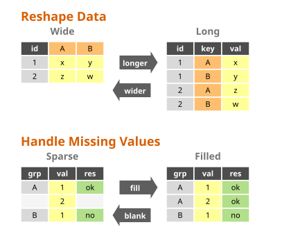
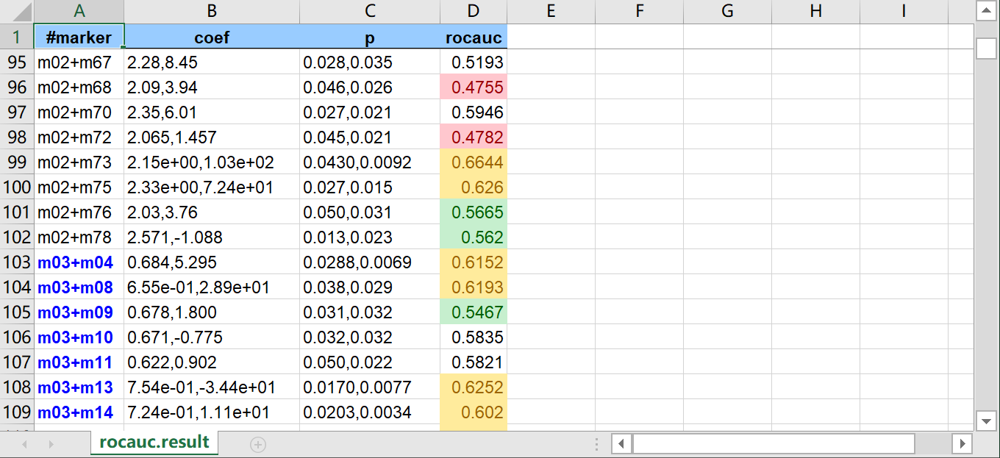

tva
Tab-separated Values Assistant. Fast, reliable TSV processing toolkit in Rust.


Overview
tva (pronounced “Tee-Va”) is a high-performance command-line toolkit written in Rust for processing tabular data. It brings the safety and speed of modern systems programming to the classic Unix philosophy.
Inspiration
- eBay’s tsv-utils (discontinued): The primary reference for functionality and performance.
- GNU Datamash: Statistical operations.
- R’s tidyr: Reshaping concepts (
longer,wider).
Use Cases
- “Middle Data”: Files too large for Excel/Pandas but too small for distributed systems (Spark/Hadoop).
- Data Pipelines: Robust CLI-based ETL steps compatible with
awk,sort, etc. - Exploration: Fast summary statistics, sampling, and filtering on raw data.
Design Principles
- Single Binary: A standalone executable with no dependencies, easy to deploy.
- Header Aware: Manipulate columns by name or index.
- Fail-fast: Strict validation ensures data integrity (no silent truncation).
- Streaming: Stateless processing designed for infinite streams and large files.
- TSV-first: Prioritizes the reliability and simplicity of tab-separated values.
- Performance: Single-pass execution with minimal memory overhead.
See Design Documentation for details.
Installation
Current release: 0.2.5
# Clone the repository and install via cargo
cargo install --force --path .
Or install the pre-compiled binary via the cross-platform package manager cbp (supports older Linux systems with glibc 2.17+):
cbp install tva
You can also download the pre-compiled binaries from the Releases page.
Running Examples
The examples in the documentation use sample data located in the docs/data/ directory. To run these examples yourself, we recommend cloning the repository:
git clone https://github.com/wang-q/tva.git
cd tva
Then you can run the commands exactly as shown in the docs (e.g., tva select -f 1 docs/data/input.csv).
Alternatively, you can download individual files from the docs/data directory on GitHub.
Commands
Selection & Sampling
select: Select and reorder columns.slice: Slice rows by index (keep or drop). Supports multiple ranges and header preservation.sample: Randomly sample rows (Bernoulli, reservoir, weighted).
Filtering
filter: Filter rows based on numeric, string, regex, or date criteria.
Ordering
sort: Sorts rows based on one or more key fields.reverse: Reverses the order of lines (liketac), optionally keeping the header at the top.transpose: Swaps rows and columns (matrix transposition).
Statistics & Summary
stats: Calculate summary statistics (sum, mean, median, min, max, etc.) with grouping.bin: Discretize numeric values into bins (useful for histograms).uniq: Deduplicate rows or count unique occurrences (supports equivalence classes).
Reshaping
longer: Reshape wide to long (unpivot). Requires a header row.wider: Reshape long to wide (pivot). Supports aggregation via--op(sum, count, etc.).fill: Fill missing values in selected columns (down/LOCF, const).blank: Replace consecutive identical values in selected columns with empty strings (sparsify).
Combining & Splitting
join: Join two files based on common keys (inner, left, outer, anti).append: Concatenate multiple TSV files, handling headers correctly.split: Split a file into multiple files (by size, key, or random).
Formatting & Utilities
check: Validate TSV file structure (column counts, encoding).nl: Add line numbers to rows.keep-header: Run a shell command on the body of a TSV file, preserving the header.
Import & Export
from: Convert other formats to TSV (csv,xlsx,html).to: Convert TSV to other formats (csv,xlsx,md).
Author
Qiang Wang wang-q@outlook.com
License
MIT. Copyright by Qiang Wang.
tva Design
This document outlines the core design decisions behind tva, drawing inspiration from the original TSV Utilities by eBay.
Why TSV?
The Tab-Separated Values (TSV) format is chosen over Comma-Separated Values (CSV) for several key reasons, especially in data mining and large-scale data processing contexts:
1. No Escapes = Reliability & Speed
- CSV Complexity: CSV uses escape characters (usually quotes) to handle delimiters (commas) and newlines within fields. Parsing this requires a state machine, which is slower and prone to errors in ad-hoc scripts.
- TSV Simplicity: TSV disallows tabs and newlines within fields. This means:
- Parsing is trivial:
split('\t')works reliably. - Record boundaries are clear: Every newline is a record separator.
- Performance: Highly optimized routines can be used to find delimiters.
- Robustness: No “malformed CSV” errors due to incorrect quoting.
- Parsing is trivial:
2. Unix Tool Compatibility
- Traditional Unix tools (
cut,awk,sort,join,uniq) work seamlessly with TSV files by specifying the delimiter (e.g.,cut -f1). - The CSV Problem: Standard Unix tools fail on CSV files with quoted fields or newlines. This forces CSV toolkits (like
xsv) to re-implement standard operations (sorting, joining) just to handle parsing correctly. - The TSV Advantage:
tvaleverages the simplicity of TSV. Whiletvaprovides its ownsortandjoinfor header awareness and Windows support, the underlying data remains compatible with the vast ecosystem of standard Unix text processing tools.
Why Rust?
tva is implemented in Rust, differing from the original TSV Utilities (written in D).
1. Safety & Performance
- Memory Safety: Rust’s ownership model ensures memory safety without a garbage collector, crucial for high-performance data processing tools.
- Zero-Cost Abstractions: High-level constructs (iterators, closures) compile down to efficient machine code, often matching or beating C/C++.
- Predictable Performance: No GC pauses means consistent throughput for large datasets.
2. Cross-Platform & Deployment
- Single Binary: Rust compiles to a static binary with no runtime dependencies (unlike Python or Java).
- Windows Support: Rust has first-class support for Windows, making
tvaeasily deployable on non-Unix environments (a key differentiator from many Unix-centric tools).
Design Goals
1. Unix Philosophy
- Do One Thing Well: Each subcommand (
filter,select,stats) focuses on a specific task. - Pipeable: Tools read from stdin and write to stdout by default, enabling powerful pipelines:
tva filter --gt score:0.9 data.tsv | tva select name,score | tva sort -k score - Streaming: Stateless where possible to support infinite streams and large files.
2. Header Awareness
- Unlike generic Unix tools,
tvais aware of headers. - Field Selection: Columns can be selected by name (
--fields user_id) rather than just index. - Header Preservation: Operations like
filterorsampleautomatically preserve the header row.
3. TSV-first
- Default separator is TAB.
- Processing revolves around the “Row + Field” model.
- CSV is treated as an import format (
from-csv), but core logic is TSV-centric.
4. Explicit CLI & Fail-fast
- Options should be explicit (no “magic” behavior).
- Strict error handling: mismatched field counts or broken headers result in immediate error exit (stderr + non-zero status), rather than silent truncation.
5. High Performance
- Aim for single-pass processing.
- Avoid unnecessary allocations and sorting.
6. Single-Threaded by Default
Core Philosophy: Single-threaded extreme performance + external parallel tools
tva adopts a single-threaded model for most data processing scenarios. This is not a technical limitation, but an active choice based on Unix philosophy:
- Do One Thing Well:
tvafocuses on streaming data parsing, transformation, and statistics, leaving parallel scheduling complexity to specialized tools (like GNU Parallel). - Don’t Reinvent the Wheel: GNU Parallel is already a mature, powerful parallel task scheduler. Rather than implementing complex thread pools and task distribution inside
tva, it’s better to maketvathe best partner for Parallel. - Determinism and Simplicity: Single-threaded models make data processing order naturally deterministic, debugging easier, and greatly reduce memory management complexity and overhead (lock-free, zero-copy easier to achieve).
Implementation Details
tva adopts several optimization strategies similar to tsv-utils to ensure high performance:
1. Buffered I/O
- Input: Uses
std::io::BufReaderto minimize system calls when reading large files. Transparently handles.gzfiles (viaflate2). - Output: Uses
std::io::BufWriterto batch writes, significantly improving throughput for commands that produce large output.
2. Zero-Copy & Re-use
- String Reuse: Where possible,
tvareuses allocated string buffers (e.g., viaread_lineinto a cleared String) to avoid the overhead of repeated memory allocation and deallocation. - Iterator-Based Processing: Leverages Rust’s iterator lazy evaluation to process data line-by-line without loading entire files into memory, enabling processing of datasets larger than RAM.
Performance Architecture & Benchmarks
tva is built on a philosophy of “Zero-Copy” and “SIMD-First”. We continuously benchmark different parsing strategies to ensure tva remains the fastest tool for TSV processing.
Parsing Strategy Evolution
We compared multiple parsing strategies to find the optimal balance between speed and correctness.
Latest Benchmark Results
Data sample: 1\tJohn\tDoe\t30\tNew York\n... (3 rows repeated 1000 times)
| Implementation | Time | Throughput | Notes |
|---|---|---|---|
| simd-csv | 67 µs | 1.05 GiB/s | Hybrid SIMD state machine, performance ceiling |
| Tva TsvReader | 72 µs | 1.00 GiB/s | Current: Zero-copy Reader + SIMD (memchr) |
| Memchr Reused Buffer | 82 µs | 878 MiB/s | Line-by-line memchr, limited by function call overhead |
| csv crate | 111 µs | 652 MiB/s | Classic DFA state machine, correctness baseline |
| Naive Split | 443 µs | 163 MiB/s | Original implementation, slowest |
Key Findings:
- Performance Leap: Our new
Tva TsvReader(1.00 GiB/s) is 2.6x faster than the old version, reaching 95% ofsimd-csvperformance. - Bottleneck Shift: The bottleneck has moved from “memory allocation/IO” to “field iteration”.
Key Insights
- I/O is the Bottleneck:
BufReader::lines()allocates a newStringper line, capping throughput at ~400 MiB/s. Chunked reading with zero-copy slicing breaks this barrier. - TSV > CSV: By enforcing no quotes/escapes, we use simpler SIMD (
memchr2) that outperforms optimized CSV parsers. - Zero Allocation: The fastest parser allocates nothing.
tvareuses buffers and yields slices (&[u8]).
Why is simd-csv still faster?
simd-csv (1.15 GiB/s) outperforms our Chunked Reader (875 MiB/s) by ~30% due to:
- Instruction-Level Parallelism: Hand-written AVX2 intrinsics process 32+ byte blocks with speculative execution.
- L1 Cache Efficiency:
simd-csv’s hybrid state machine is extremely compact. - The “Good Enough” Threshold: At 875 MiB/s, we parse 1GB in ~1.2 seconds—already faster than most I/O subsystems. Further optimization requires
unsafeassembly with diminishing returns.
TSV Parser Design
This section details the design of tva’s custom TSV parser, which leverages the simplicity of the TSV format to achieve high performance.
Format Differences: CSV vs TSV
| Feature | CSV (RFC 4180) | TSV (Simple) | Impact |
|---|---|---|---|
| Delimiter | , (variable) | \t (fixed) | TSV can hardcode delimiter, enabling SIMD optimization. |
| Quotes | Supports " wrapping | Not supported | TSV eliminates “in_quote” state machine, removing branch misprediction. |
| Escapes | "" escapes quotes | None | TSV supports true zero-copy slicing without rewriting. |
| Newlines | Allowed in fields | Not allowed | TSV guarantees \n always means record end, enabling parallel chunking. |
Design Goals
The goal is to build a TSV parser that is faster than rust-csv and lighter than simd-csv:
- Pure SIMD Scanning: Without quote handling, we can use SIMD (
memchrorstd::simd) to blindly scan for\tand\n. No backtracking, no state maintenance. - Absolute Zero-Copy: CSV parsers must copy memory when encountering escaped quotes (
Cow<str>). TSV parsers can always return slices (&stror&[u8]) from the original buffer, completely avoiding allocation. - Line-Level Parallelism: Since
\nhas unique semantics in TSV (record separator), we can safely split large files into chunks, align at\nboundaries, and parse in parallel. This is difficult in CSV where\nmight be inside quotes.
Can We Do Better?
TSV’s Advantage: TSV has no quotes. This means we don’t need to check if a memchr hit is inside quotes or maintain a Quoted state like simd-csv does.
Simpler SIMD: We only need to find \t and \n. This is fewer special characters than CSV’s 3-4, reducing register pressure.
Theoretical Limit: If simd-csv can achieve 1.12 GiB/s while handling quote logic, a pure TSV parser should theoretically reach memory bandwidth limits (or at least 2-3 GiB/s).
Action Items:
We don’t need complex hybrid state machines. We just need an optimized memchr2(b'\t', b'\n') loop with efficient buffer management. Our Memchr Reused Buffer (806 MiB/s) already validates this approach.
Common Behavior & Syntax
tva tools share a consistent set of behaviors and syntax conventions, making them easy to learn and combine.
Field Syntax
All tools use a unified syntax to identify fields (columns). See Field Syntax Documentation for details.
- Index:
1(first column),2(second column). - Range:
1-3(columns 1, 2, 3). - List:
1,3,5. - Name:
user_id(requires--header). - Wildcard:
user_*(matchesuser_id,user_name, etc.). - Exclusion:
--exclude 1,2(select all except 1 and 2).
Header Processing
- Input: Most tools accept a
--header(or-H) flag to indicate the first line of input is a header. This enables field selection by name.- Note: The
longerandwidercommands assume a header by default.
- Note: The
- Output: When
--headeris used,tvaensures the header is preserved in the output (unless explicitly suppressed). - No Header: Without this flag, the first row is treated as data. Field selection is limited to indices (no names).
- Multiple Files: If processing multiple files with
--header:- The header from the first file is written to output.
- Headers from subsequent files are skipped (assumed to be identical to the first).
- Validation: Field counts must be consistent;
tvafails immediately on jagged rows.
Multiple Files & Standard Input
- Standard Input: If no files are provided, or if
-is used as a filename,tvareads from standard input (stdin). - Concatenation: When multiple files are provided,
tvaprocesses them sequentially as a single continuous stream of data (logical concatenation).- Example:
tva filter --gt value:10 file1.tsv file2.tsvprocesses both files.
- Example:
Comparison with Other Tools
tva is designed to coexist with and complement other excellent open-source tools for tabular data. It combines the strict, high-performance nature of tsv-utils with the cross-platform accessibility and modern ecosystem of Rust.
| Feature | tva (Rust) | tsv-utils (D) | xsv / qsv (Rust) | datamash (C) |
|---|---|---|---|---|
| Primary Format | TSV (Strict) | TSV (Strict) | CSV (Flexible) | TSV (Default) |
| Escapes | No | No | Yes | No |
| Header Aware | Yes | Yes | Yes | Partial |
| Field Syntax | Names & Indices | Names & Indices | Names & Indices | Indices |
| Platform | Cross-platform | Unix-focused | Cross-platform | Unix-focused |
| Performance | High | High | High (CSV cost) | High |
Detailed Breakdown
-
tsv-utils (D):
- The direct inspiration for
tva.tvaaims to be a Rust-based alternative that is easier to install (no D compiler needed) and extends functionality (e.g.,sample,slice).
- The direct inspiration for
-
- The premier tools for CSV processing.
- Because they must handle CSV escapes, they are inherently more complex than TSV-only tools.
- Use these if you must work with CSVs directly; use
tvaif you can convert to TSV for faster, simpler processing.
-
GNU Datamash (C):
- Excellent for statistical operations (groupby, pivot) on TSV files.
tva statsis similar but adds header awareness and named field selection, making it friendlier for interactive use.
-
Miller (mlr) (C):
- A powerful “awk for CSV/TSV/JSON”. Supports many formats and complex transformations.
- Miller is a DSL (Domain Specific Language);
tvafollows the “do one thing well” Unix philosophy with separate subcommands.
-
csvkit (Python):
- Very feature-rich but slower due to Python overhead. Great for converting obscure formats (XLSX, DBF) to CSV/TSV.
-
GNU shuf (C):
- Standard tool for random permutations.
tva sampleadds specific data science sampling methods: weighted sampling (by column value) and Bernoulli sampling.
TVA Expression Design Principles
The expression language in tva follows these core design principles:
- Conciseness: Syntax should be as short as possible for common operations (like column references).
- Type-aware: Able to recognize numbers, dates, etc. when needed, but treats data as byte strings by default for speed.
- Shell-friendly: Syntax avoids conflicts with Shell special characters (like
$,!,`), reducing user escaping burden. Since expressions typically run in command lines and are wrapped in quotes, they should avoid triggering Shell variable substitution (like$var). - Streaming: Expressions are evaluated row-by-row with no global state, suitable for big data processing.
- Error Handling: Defaults to permissive mode where invalid operations return
nullinstead of errors, but can be changed via strict mode switches. - Consistency: Maintains similarity with existing tools (like jq, xan) to reduce learning costs.
- Parallel Compatible: When users need parallel processing, it’s typically
parallelcallingtva(e.g.,parallel "tva ... {}"), sotva’s internal syntax should not interfere withparallel’s parameter replacement mechanism.
Aggregation Architecture
This section provides a deep dive into the architectural differences between tva and other tools like xan (Rust) and tsv-utils (D Language) in their aggregation module designs.
tva: Runtime Polymorphism with SoA Memory Layout
Design: Hybrid Struct-of-Arrays (SoA). The Schema (StatsProcessor) builds the computation graph at runtime, while the State (Aggregator) uses compact columnar storage (Vec<f64>, Vec<String>). Computation logic is dynamically dispatched via Box<dyn Calculator> trait objects.
Advantages:
- Memory Efficient: Even with millions of groups, each group’s
Aggregatoroverhead is minimal (only a fewVecheaders). - Modular: Adding new operators only requires implementing the
Calculatortrait, completely decoupled from existing code. - Fast Compilation: Compared to generic/template bloat,
dyn Traitsignificantly reduces compile times and binary size. - Deterministic: Uses
IndexMapto guarantee that GroupBy output order matches the first-occurrence order in the input.
Trade-offs: Virtual function calls (vtable) have a tiny overhead compared to inlined code in extremely high-frequency loops (e.g., 10 calls per row), but this is usually negligible in I/O-bound CLI tools.
Other Tools
xan: Uses enum dispatch (enum Agg { Sum(SumState), ... }) to avoid heap allocation, but requires modifying core enum definitions to add new operators.
tsv-utils (D): Uses compile-time template specialization for extreme performance, but has long compile times and high code complexity.
datamash (C): Uses sort-based grouping with O(1) memory, but requires pre-sorted input.
dplyr (R): Uses vectorized mask evaluation, but depends on columnar storage and is unsuitable for streaming.
性能基准测试计划
我们旨在重现 tsv-utils 使用的严格基准测试策略。
1. 基准工具
- tsv-utils (D): 主要性能对标目标。
- qsv (Rust): xsv 的活跃分支，功能超级强大。
- GNU datamash (C): 统计操作的标准。
- GNU awk / mawk (C): 行过滤和基本处理的基准。
- csvtk (Go): 另一个现代跨平台工具包。
2. 测试数据集与策略
我们将使用不同规模的数据集来全面评估性能。
数据集来源
- HEPMASS (4.8GB): UCI Machine Learning Repository。
- 内容: 约 700万行，29列数值数据。
- 用途: 用于数值行过滤、列选择、统计摘要和文件连接测试。
- FIA Tree Data (2.7GB): USDA Forest Service。
- 内容:
TREE_GRM_ESTN.csv的前 1400 万行，包含混合文本和数值。 - 用途: 用于正则行过滤和CSV 转 TSV测试。
- 内容:
测试策略
- 吞吐量与稳定性 (大文件):
- 使用完整的 GB 级数据集 (HEPMASS, FIA Tree Data)。
- 目标: 压力测试流处理能力、内存稳定性以及 I/O 吞吐量。
- 启动开销 (小文件):
- 使用 HEPMASS_100k (~70MB, HEPMASS 的前 10万行)。
- 目标: 测试工具的启动开销 (Startup Overhead) 和缓冲策略。对于极短的运行时间，Rust/C 的启动时间差异会更明显。
3. 详细测试场景
为了确保公平和全面的对比，我们将执行以下具体场景（参考 tsv-utils 2017/2018）：
- 数值行过滤 (Numeric Filter):
- 逻辑: 多列数值比较 (例如
col4 > 0.000025 && col16 > 0.3)。 - 基准:
tva filtervsawk(mawk/gawk) vstsv-filter(D) vsqsv search(Rust)。 - 目的: 测试数值解析和比较的效率。
- 逻辑: 多列数值比较 (例如
- 正则行过滤 (Regex Filter):
- 逻辑: 针对特定文本列的正则匹配 (例如
[RD].*(ION[0-2]))。 - 基准:
tva filter --regexvsgrep/awk/ripgrep(如果适用) vstsv-filtervsqsv search。 - 注意: 区分全行匹配与特定字段匹配。
- 逻辑: 针对特定文本列的正则匹配 (例如
- 列选择 (Column Selection):
- 逻辑: 提取分散的列 (例如 1, 8, 19)。
- 基准:
tva selectvscutvstsv-selectvsqsv selectvscsvtk cut。 - 注意: 测试不同文件大小。GNU
cut在小文件上通常非常快，但在大文件上可能不如流式优化工具。 - 短行测试 (Short Lines): 针对海量短行数据（如 8600万行，1.7GB）进行测试，主要考察每行处理的固定开销。
- 文件连接 (Join):
- 数据准备: 将大文件拆分为两个文件（例如：左文件含列 1-15，右文件含列 1, 16-29），并随机打乱行顺序，但保留公共键（列 1）。
- 逻辑: 基于公共键将两个乱序文件重新连接。
- 基准:
tva joinvsjoin(Unix - 需先 sort) vsqsv joinvstsv-joinvscsvtk join。 - 目的: 测试哈希表构建和查找的内存与速度平衡。
- 统计摘要 (Summary Statistics):
- 逻辑: 计算多个列的 Count, Sum, Min, Max, Mean, Stdev。
- 基准:
tva statsvsdatamashvstsv-summarizevsqsv statsvscsvtk summary。
- CSV 转 TSV (CSV to TSV):
- 逻辑: 处理包含转义字符和嵌入换行符的复杂 CSV。
- 基准:
tva from csvvsqsv fmtvscsvtk csv2tabvscsv2tsv(tsv-utils)。 - 目的: 这是一个高计算密集型任务，测试 CSV 解析器的性能。
- 加权随机采样 (Weighted Sampling):
- 逻辑: 基于权重列进行加权随机采样 (Weighted Reservoir Sampling)。
- 基准:
tva sample --weightvstsv-samplevsqsv sample(如果支持)。 - 目的: 测试复杂算法与 I/O 的结合效率。
- 去重 (Deduplication):
- 逻辑: 基于特定列进行哈希去重。
- 基准:
tva uniqvstsv-uniqvsawkvssort | uniq。 - 目的: 测试哈希表性能和内存管理。
- 排序 (Sorting):
- 逻辑: 基于数值列进行排序。
- 基准:
tva sortvssort(GNU) vstsv-sort。 - 目的: 测试外部排序算法和内存使用。
- 切片 (Slicing):
- 逻辑: 提取文件中间的大段行 (如第 100万 到 200万 行)。
- 基准:
tva slicevssedvstail | head。 - 目的: 测试快速跳过行的能力。
- 反转 (Reverse):
- 逻辑: 反转整个文件的行序。
- 基准:
tva reversevstac。
- 追加 (Append):
- 逻辑: 连接多个大文件。
- 基准:
tva appendvscat。
- 导出 CSV (Export to CSV):
- 逻辑: 将 TSV 转换为标准 CSV (处理转义)。
- 基准:
tva to csvvsqsv fmt。
4. 执行环境与记录
- 硬件记录: 必须记录 CPU 型号、核心数、RAM 大小以及磁盘类型 (NVMe SSD 对 I/O 密集型测试影响巨大)。
- 软件版本:
- Rust 编译器版本 (
rustc --version)。 - 所有对比工具的版本 (
qsv --version,awk --version等)。
- Rust 编译器版本 (
- 预热 (Warmup): 使用
hyperfine --warmup确保文件系统缓存处于一致状态（通常是热缓存状态）。
5. 执行工作流示例
我们将使用内联 Bash 脚本与 hyperfine 结合，实现完全自动化的基准测试。
# 1. 数据准备 (Data Preparation)
# ------------------------------
# 下载并解压 HEPMASS (如果不存在)
if [ ! -f "hepmass.tsv" ]; then
echo "Downloading HEPMASS dataset..."
curl -O https://archive.ics.uci.edu/ml/machine-learning-databases/00347/all_train.csv.gz
gzip -d all_train.csv.gz
# 转换为 TSV
tva from csv all_train.csv > hepmass.tsv
fi
# 准备 Join 测试数据 (拆分并乱序)
if [ ! -f "hepmass_left.tsv" ]; then
echo "Preparing Join datasets..."
# 添加行号作为唯一键
tva nl -H --header-string "row_id" hepmass.tsv > hepmass_numbered.tsv
# 拆分并打乱
tva select -f 1-16 hepmass_numbered.tsv | tva sample -H > hepmass_left.tsv
tva select -f 1,17-30 hepmass_numbered.tsv | tva sample -H > hepmass_right.tsv
rm hepmass_numbered.tsv
fi
# 2. 运行基准测试 (Run Benchmark)
# ------------------------------
echo "Running Benchmarks..."
# Scenario 1: Numeric Filter
hyperfine \
--warmup 3 \
--min-runs 5 \
--export-csv benchmark_filter.csv \
-n "tva filter" "tva filter -H --gt 1:0.5 hepmass.tsv > /dev/null" \
-n "tsv-filter" "tsv-filter -H --gt 1:0.5 hepmass.tsv > /dev/null" \
-n "awk" "awk -F '\t' '\$1 > 0.5' hepmass.tsv > /dev/null"
# Scenario 2: Column Selection
hyperfine \
--warmup 3 \
--min-runs 5 \
--export-csv benchmark_select.csv \
-n "tva select" "tva select -f 1,8,19 hepmass.tsv > /dev/null" \
-n "tsv-select" "tsv-select -f 1,8,19 hepmass.tsv > /dev/null" \
-n "cut" "cut -f 1,8,19 hepmass.tsv > /dev/null"
# Scenario 3: Join
hyperfine \
--warmup 3 \
--min-runs 5 \
--export-csv benchmark_join.csv \
-n "tva join" "tva join -H -f hepmass_right.tsv -k 1 hepmass_left.tsv > /dev/null" \
-n "tsv-join" "tsv-join -H -f hepmass_right.tsv -k 1 hepmass_left.tsv > /dev/null" \
-n "xan join" "xan join -d '\t' --semi row_id hepmass_left.tsv row_id hepmass_right.tsv > /dev/null"
# qsv join is too slow
# "qsv join row_id hepmass_left.tsv row_id hepmass_right.tsv > /dev/null"
# Scenario 4: Summary Statistics
hyperfine \
--warmup 3 \
--min-runs 5 \
--export-csv benchmark_stats.csv \
-n "tva stats" "tva stats -H --count --sum 3,5,20 --min 3,5,20 --max 3,5,20 --mean 3,5,20 --stdev 3,5,20 hepmass.tsv > /dev/null" \
-n "tsv-summarize" "tsv-summarize -H --count --sum 3,5,20 --min 3,5,20 --max 3,5,20 --mean 3,5,20 --stdev 3,5,20 hepmass.tsv > /dev/null"
# Scenario 5: Weighted Sampling (k=1000)
# Assumes column 5 is a suitable weight (positive float)
hyperfine \
--warmup 3 \
--min-runs 5 \
--export-csv benchmark_sample.csv \
-n "tva sample" "tva sample -H --weight-field 5 -n 1000 hepmass.tsv > /dev/null" \
-n "tsv-sample" "tsv-sample -H --weight-field 5 -n 1000 hepmass.tsv > /dev/null"
# Scenario 6: Uniq (Hash-based Deduplication)
hyperfine \
--warmup 3 \
--min-runs 5 \
--export-csv benchmark_uniq.csv \
-n "tva uniq" "tva uniq -H -f 1 hepmass.tsv > /dev/null" \
-n "tsv-uniq" "tsv-uniq -H -f 1 hepmass.tsv > /dev/null"
# Scenario 7: Sort (Numeric)
hyperfine \
--warmup 2 \
--min-runs 3 \
--export-csv benchmark_sort.csv \
-n "tva sort" "tva sort -H -k 1 -n hepmass.tsv > /dev/null"
# Scenario 8: Slice (Middle of file)
hyperfine \
--warmup 3 \
--min-runs 5 \
--export-csv benchmark_slice.csv \
-n "tva slice" "tva slice -r 1000000-2000000 hepmass.tsv > /dev/null" \
-n "sed" "sed -n '1000000,2000000p' hepmass.tsv > /dev/null"
# Scenario 9: Reverse
hyperfine \
--warmup 2 \
--min-runs 5 \
--export-csv benchmark_reverse.csv \
-n "tva reverse" "tva reverse hepmass.tsv > /dev/null" \
-n "tac" "tac hepmass.tsv > /dev/null"
# Scenario 10: Append
hyperfine \
--warmup 2 \
--min-runs 5 \
--export-csv benchmark_append.csv \
-n "tva append" "tva append hepmass.tsv hepmass.tsv > /dev/null" \
-n "cat" "cat hepmass.tsv hepmass.tsv > /dev/null"
# 3. 结果处理与可视化 (Process & Visualize)
# ------------------------------
# 使用 Python 绘图 (内联脚本)
# uv pip install --system pandas seaborn matplotlib
python3 -c "
import pandas as pd
import seaborn as sns
import matplotlib.pyplot as plt
# 读取 hyperfine 的 CSV 数据
df = pd.read_csv('benchmark_filter.csv')
# 简单的条形图
plt.figure(figsize=(10, 6))
sns.barplot(x='mean', y='command', data=df)
plt.title('Benchmark Results (Filter): Execution Time (s)')
plt.xlabel('Time (seconds)')
plt.tight_layout()
plt.savefig('benchmark_plot.png')
print('Plot saved to benchmark_plot.png')
"
6. 优化目标
- 内存使用: 确保流式命令（filter, select, from-csv）保持 O(1) 内存使用。
- 零拷贝: 尽可能使用零拷贝解析技术（类似
csvcrate 的ByteRecord）。 - I/O 效率: 确保所有读写操作都经过
BufReader/BufWriter缓冲。 - 构建优化:
- LTO (Link Time Optimization):
Cargo.toml中已启用lto = true，这对减少二进制大小和提高运行时性能至关重要。 - PGO (Profile Guided Optimization): 未来探索方向。使用真实工作负载数据来指导编译器优化，进一步压榨性能。
- LTO (Link Time Optimization):
Selection & Sampling Documentation
This document explains how to use the selection and sampling commands in tva: select, slice, and sample. These commands allow you to subset your data based on structure (columns) or position (rows).
Introduction
Data analysis often begins with selecting the relevant subset of data:
select: Selects and reorders columns (e.g., “keep onlynameandemail”).slice: Selects rows by their position (index) in the file (e.g., “keep rows 10-20”).sample: Randomly selects a subset of rows.
Field Syntax
All tools use a unified syntax to identify fields (columns). See Field Syntax Documentation for details.
select (Column Selection)
The select command allows you to keep only specific columns and reorder them.
Basic Usage
tva select [input_files...] --fields <columns>
--fields/-f: Comma-separated list of columns to select.- Names:
name,email - Indices:
1,3(1-based) - Ranges:
1-3,start_col-end_col - Wildcards:
user_*,*_id
- Names:
Examples
1. Select by Name and Index
Consider the dataset docs/data/us_rent_income.tsv:
GEOID NAME variable estimate moe
01 Alabama income 24476 136
01 Alabama rent 747 3
02 Alaska income 32940 508
...
To keep only the state name (NAME) and the estimate value (estimate):
tva select docs/data/us_rent_income.tsv -f NAME,estimate
Output:
NAME estimate
Alabama 24476
Alabama 747
Alaska 32940
...
2. Reorder Columns
You can change the order of columns. Let’s move variable to the first column:
tva select docs/data/us_rent_income.tsv -f variable,estimate,NAME
Output:
variable estimate NAME
income 24476 Alabama
rent 747 Alabama
income 32940 Alaska
...
3. Select by Range and Wildcard
Consider docs/data/billboard.tsv which has many week columns (wk1, wk2, wk3…):
artist track wk1 wk2 wk3
2 Pac Baby Don't Cry 87 82 72
2Ge+her The Hardest Part 91 87 92
To select the artist, track, and all week columns:
tva select docs/data/billboard.tsv -f artist,track,wk*
Or using a range (if you know the indices):
tva select docs/data/billboard.tsv -f 1-2,3-5
slice (Row Selection by Index)
The slice command selects rows based on their integer index (position). Indices are 1-based.
Basic Usage
tva slice [input_files...] --rows <range> [options]
--rows/-r: The range of rows to keep (e.g.,1-10,5,100-). Can be specified multiple times.--invert/-v: Invert selection (drop the specified rows).--header/-H: Always preserve the first row (header).
Examples
1. Keep Specific Range (Head/Body)
To inspect the first 5 rows of docs/data/billboard.tsv (including header):
tva slice docs/data/billboard.tsv -r 1-5
Output:
artist track wk1 wk2 wk3
2 Pac Baby Don't Cry 87 82 72
2Ge+her The Hardest Part 91 87 92
...
2. Drop Header (Data Only)
Sometimes you want to process data without the header. You can drop the first row using --invert:
tva slice docs/data/billboard.tsv -r 1 --invert
Output:
2 Pac Baby Don't Cry 87 82 72
2Ge+her The Hardest Part 91 87 92
...
3. Keep Header and Specific Data Rows
To keep the header (row 1) and a slice of data from the middle (rows 10-15), use the -H flag:
tva slice docs/data/us_rent_income.tsv -H -r 10-15
This ensures the first line is always printed, even if it’s not in the range 10-15.
sample (Random Sampling)
The sample command randomly selects a subset of rows. This is useful for exploring large datasets.
Basic Usage
tva sample [input_files...] [options]
--rate/-r: Sampling rate (probability 0.0-1.0). (Bernoulli sampling)--n/-n: Exact number of rows to sample. (Reservoir sampling)--seed/-s: Random seed for reproducibility.
Examples
1. Sample by Rate
To keep approximately 10% of the rows from docs/data/us_rent_income.tsv:
tva sample docs/data/us_rent_income.tsv -r 0.1
2. Sample Exact Number
To pick exactly 5 random rows for inspection:
tva sample docs/data/us_rent_income.tsv -n 5
Output (example):
GEOID NAME variable estimate moe
35 New Mexico rent 809 11
55 Wisconsin income 32018 247
18 Indiana rent 782 5
...
Row Filtering Documentation
This document explains how to use the filter command in tva. This command allows you to subset your data based on row values.
filter (Row Filtering)
The filter command selects rows where a condition is true. It supports numeric, string, regular expression, and date comparisons.
Basic Usage
tva filter [input_files...] [options] <criteria>
<criteria>: The condition to check. Format:<column><operator><value>.- Operators:
- Numeric:
==,!=,>,>=,<,<= - String:
str-eq,str-ne,str-contains,str-starts-with,str-ends-with - Regex:
regex-match,regex-not-match - Date:
date-eq,date-ne,date-gt,date-ge,date-lt,date-le
- Numeric:
- Operators:
Examples
1. Numeric Filtering
Filter rows where the value in column estimate is greater than 30,000 in docs/data/us_rent_income.tsv:
tva filter docs/data/us_rent_income.tsv --gt estimate:30000
Output:
GEOID NAME variable estimate moe
02 Alaska income 32940 508
04 Arizona income 31614 242
06 California income 33095 172
...
2. String Filtering
Filter rows where the variable column equals “rent” in docs/data/us_rent_income.tsv:
tva filter docs/data/us_rent_income.tsv --str-eq variable:rent
Output:
GEOID NAME variable estimate moe
01 Alabama rent 747 3
02 Alaska rent 1200 13
04 Arizona rent 976 4
...
3. Regex Filtering
Filter rows where the track column contains “Baby” in docs/data/billboard.tsv:
tva filter docs/data/billboard.tsv --regex-match "track:Baby"
Output:
artist track wk1 wk2 wk3
2 Pac Baby Don't Cry 87 82 72
Beenie Man Girls Dem Sugar 87 70 63
...
4. Date Filtering
Filter rows where dob_child1 is after 1999-01-01 in docs/data/household.tsv:
tva filter docs/data/household.tsv --date-gt dob_child1:1999-01-01
(Note: Ensure your date format is ISO 8601 YYYY-MM-DD)
Ordering Documentation
This document explains how to use the ordering commands in tva: sort, reverse, and transpose. These commands allow you to rearrange the rows and columns of your data.
Introduction
Ordering is a crucial step in data preparation and analysis. You might need to sort data to find the top items, reverse the order to see the most recent entries first, or transpose a matrix to swap rows and columns.
sort: Sorts rows based on one or more key fields.reverse: Reverses the order of lines (liketac), optionally keeping the header at the top.transpose: Swaps rows and columns (matrix transposition).
sort (External Sort)
The sort command sorts the lines of a TSV file based on the values in specified columns. It supports both lexicographic (string) and numeric sorting.
Basic Usage
tva sort [input_files...] [options]
--key/-k: Specify the field(s) to use as the sort key. You can use 1-based indices (e.g.,1,2) or ranges (e.g.,2,4-5).--numeric/-n: Compare the key fields numerically instead of lexicographically.--reverse/-r: Reverse the sort result (descending order).
Examples
1. Sort by a single column (Lexicographic)
Sort docs/data/us_rent_income.tsv by the NAME column (column 2):
tva sort docs/data/us_rent_income.tsv -k 2
Output (first 5 lines):
01 Alabama income 24476 136
01 Alabama rent 747 3
02 Alaska income 32940 508
02 Alaska rent 1200 13
04 Arizona income 27517 148
2. Sort numerically
Sort docs/data/us_rent_income.tsv by the estimate column (column 4) numerically:
tva sort docs/data/us_rent_income.tsv -k 4 -n
Output (first 5 lines):
GEOID NAME variable estimate moe
05 Arkansas rent 709 5
01 Alabama rent 747 3
04 Arizona rent 972 4
02 Alaska rent 1200 13
3. Sort by multiple columns
Sort first by GEOID (column 1), then by NAME (column 2):
tva sort docs/data/us_rent_income.tsv -k 1,2
reverse (Reverse Lines)
The reverse command reverses the order of lines in the input. This is similar to the Unix tac command but includes features specifically for tabular data, such as header preservation.
Basic Usage
tva reverse [input_files...] [options]
--header/-H: Treat the first line as a header and keep it at the top of the output.
Examples
1. Reverse a file keeping the header
Reverse docs/data/us_rent_income.tsv but keep the header line at the top:
tva reverse docs/data/us_rent_income.tsv --header
Output (first 5 lines):
GEOID NAME variable estimate moe
06 California rent 1358 3
06 California income 29454 109
05 Arkansas rent 709 5
05 Arkansas income 23789 165
transpose (Matrix Transpose)
The transpose command swaps the rows and columns of a TSV file. It reads the entire file into memory and performs a matrix transposition.
Basic Usage
tva transpose [input_file] [options]
Notes
- Strict Mode:
transposeexpects a rectangular matrix. All rows must have the same number of columns as the first row. If the file is jagged (rows have different lengths), the command will fail with an error. - Memory Usage: Since it reads the whole file, be cautious with very large files.
Examples
1. Transpose a table
Transpose docs/data/relig_income.tsv:
tva transpose docs/data/relig_income.tsv
Output (first 5 lines):
religion Agnostic Atheist Buddhist
<$10k 27 12 27
$10-20k 34 27 21
$20-30k 60 37 30
$30-40k 81 25 34
Statistics Documentation
This document explains how to use the statistics and summary commands in tva: stats, bin, and uniq. These commands allow you to summarize data, discretize values, and deduplicate rows.
Introduction
stats: Calculates summary statistics (like sum, mean, max) for fields, optionally grouping by key fields.bin: Discretizes numeric values into bins (useful for histograms).uniq: Deduplicates rows based on a key, with options for equivalence classes and occurrence numbering.
stats (Summary Statistics)
The stats command calculates summary statistics for specified fields. It mimics the functionality of tsv-summarize.
Basic Usage
tva stats [input_files...] [options]
Options
--header/-H: Treat the first line of each file as a header.--group-by/-g: Fields to group by (e.g.,1,1,2).--count/-c: Count the number of rows.--sum: Calculate sum of fields.--mean: Calculate mean of fields.--min: Calculate min of fields.--max: Calculate max of fields.--median: Calculate median of fields.--stdev: Calculate standard deviation of fields.--variance: Calculate variance of fields.--mad: Calculate median absolute deviation of fields.--first: Get the first value of fields.--last: Get the last value of fields.--unique: List unique values of fields (comma separated).--collapse: List all values of fields (comma separated).--rand: Pick a random value from fields.
Examples
1. Calculate basic stats for a column
Calculate the mean and max of the estimate column in docs/data/us_rent_income.tsv:
tva stats docs/data/us_rent_income.tsv --header --mean estimate --max estimate
Output:
estimate_mean estimate_max
14316.2 32940
2. Group by a column
Group by variable and calculate the mean of estimate:
tva stats docs/data/us_rent_income.tsv --header --group-by variable --mean estimate
Output:
variable estimate_mean
income 27635.2
rent 997.2
3. Count rows per group
Count the number of rows for each unique value in NAME:
tva stats docs/data/us_rent_income.tsv --header --group-by NAME --count
Output (first 5 lines):
NAME count
Alabama 2
Alaska 2
Arizona 2
Arkansas 2
bin (Discretize Values)
The bin command discretizes numeric values into bins. This is useful for creating histograms or grouping continuous data.
Basic Usage
tva bin [input_files...] --width <width> --field <field> [options]
Options
--width/-w: Bin width (bucket size). Required.--field/-f: Field to bin (1-based index or name). Required.--min/-m: Alignment/Offset (bin start). Default: 0.0.--new-name: Append as new column with this name (instead of replacing).--header/-H: Input has header.
Notes
- Formula:
floor((value - min) / width) * width + min - Replaces the value in the target field with the bin start (lower bound) unless
--new-nameis used.
Examples
1. Bin a numeric column
Bin the breaks column in docs/data/warpbreaks.tsv with a width of 10:
tva bin docs/data/warpbreaks.tsv --header --width 10 --field breaks
Output (first 5 lines):
wool tension breaks
A L 20
A L 30
A L 50
A M 10
2. Bin with alignment
Bin the breaks column, aligning bins to start at 5:
tva bin docs/data/warpbreaks.tsv --header --width 10 --min 5 --field breaks
Output (first 5 lines):
wool tension breaks
A L 25
A L 25
A L 45
A M 15
3. Append bin as a new column
Bin the breaks column and append the result as breaks_bin:
tva bin docs/data/warpbreaks.tsv --header --width 10 --field breaks --new-name breaks_bin
Output (first 5 lines):
wool tension breaks breaks_bin
A L 26 20
A L 30 30
A L 54 50
A M 18 10
uniq (Deduplicate Rows)
The uniq command deduplicates rows of one or more TSV files without sorting. It uses a hash set to track unique keys.
Basic Usage
tva uniq [input_files...] [options]
Options
--fields/-f: TSV fields (1-based) to use as dedup key.--header/-H: Treat the first line of each input as a header.--ignore-case/-i: Ignore case when comparing keys.--repeated/-r: Output only lines that are repeated based on the key.--at-least/-a: Output only lines that are repeated at least INT times.--max/-m: Max number of each unique key to output (zero is ignored).--equiv/-e: Append equivalence class IDs rather than only uniq entries.--number/-z: Append occurrence numbers for each key.
Examples
1. Deduplicate whole rows
tva uniq docs/data/us_rent_income.tsv --header
Output (first 5 lines):
GEOID NAME variable estimate moe
01 Alabama income 24476 136
01 Alabama rent 747 3
02 Alaska income 32940 508
2. Deduplicate by a specific column
Deduplicate based on the NAME column:
tva uniq docs/data/us_rent_income.tsv --header -f NAME
Output (first 5 lines):
GEOID NAME variable estimate moe
01 Alabama income 24476 136
02 Alaska income 32940 508
04 Arizona income 27517 148
05 Arkansas income 23789 165
3. Output repeated lines only
Output lines where the NAME column appears more than once:
tva uniq docs/data/us_rent_income.tsv --header -f NAME --repeated
Output (first 5 lines):
GEOID NAME variable estimate moe
01 Alabama rent 747 3
02 Alaska rent 1200 13
04 Arizona rent 972 4
05 Arkansas rent 709 5
Reshaping Documentation
This document explains how to use the reshaping commands in tva: longer, wider, fill, and blank. These commands are inspired by the data tidying philosophy of the R package tidyr.
Introduction
Data reshaping involves changing the structure of a dataset without necessarily changing the information it contains. tva provides a suite of tools for these tasks:
- Pivoting:
longer: Reshapes “wide” data (many columns) into “long” data (many rows).wider: Reshapes “long” data into “wide” data.
- Completion:
fill: Fills missing values with previous non-missing values (LOCF) or constants.blank: The inverse offill; replaces repeated values with empty strings (sparsify).

longer (Wide to Long)
The longer command is designed to reshape “wide” data into a “long” format. “Wide” data often has column names that are actually values of a variable. For example, a table might have columns like 2020, 2021, 2022 representing years. longer gathers these columns into a pair of key-value columns (e.g., year and population), making the data “longer” (more rows, fewer columns) and easier to analyze.
Basic Usage
tva longer [input_files...] --cols <columns> [options]
--cols/-c: Specifies which columns to reshape. You can use column names, indices (1-based), or ranges (e.g.,3-5,wk*).--names-to: The name of the new column that will store the original column headers (default: “name”).--values-to: The name of the new column that will store the data values (default: “value”).
Examples
1. String Data in Column Names
Consider a dataset docs/data/relig_income.tsv where income brackets are spread across column names:
religion <$10k $10-20k $20-30k
Agnostic 27 34 60
Atheist 12 27 37
Buddhist 27 21 30
To tidy this, we want to turn the income columns into a single income variable:
tva longer docs/data/relig_income.tsv --cols 2-4 --names-to income --values-to count
Output:
religion income count
Agnostic <$10k 27
Agnostic $10-20k 34
Agnostic $20-30k 60
...
2. Numeric Data in Column Names
The docs/data/billboard.tsv dataset records song rankings by week (wk1, wk2, etc.):
artist track wk1 wk2 wk3
2 Pac Baby Don't Cry 87 82 72
2Ge+her The Hardest Part 91 87 92
We can gather the week columns and strip the “wk” prefix to get a clean number:
tva longer docs/data/billboard.tsv --cols "wk*" --names-to week --values-to rank --names-prefix "wk" --values-drop-na
--names-prefix "wk": Removes “wk” from the start of the column names (e.g., “wk1” -> “1”).--values-drop-na: Drops rows where the rank is missing (empty).
Output:
artist track week rank
2 Pac Baby Don't Cry 1 87
2 Pac Baby Don't Cry 2 82
...
3. Many Variables in Column Names (Regex Extraction)
Sometimes column names contain multiple pieces of information. For example, in the docs/data/who.tsv dataset, columns like new_sp_m014 encode:
new: new cases (constant)sp: diagnosis methodm: gender (m/f)014: age group (0-14)
country iso2 iso3 year new_sp_m014 new_sp_f014
Afghanistan AF AFG 1980 NA NA
We can use --names-pattern with a regular expression to extract these parts into multiple columns:
tva longer docs/data/who.tsv --cols "new_*" --names-to diagnosis gender age --names-pattern "new_?(.*)_(.)(.*)"
--names-to: We provide 3 names for the 3 capture groups in the regex.--names-pattern: The regexnew_?(.*)_(.)(.*)captures:.*(diagnosis, e.g., “sp”).(gender, e.g., “m”).*(age, e.g., “014”)
Output:
country iso2 iso3 year diagnosis gender age value
Afghanistan AF AFG 1980 sp m 014 NA
...
4. Splitting Column Names with a Separator
If column names are consistently separated by a character, you can use --names-sep.
Consider a dataset docs/data/semester.tsv where columns represent year_semester:
student 2020_1 2020_2 2021_1
Alice 85 90 88
Bob 78 82 80
We can split the column names into two separate columns: year and semester.
tva longer docs/data/semester.tsv --cols 2-4 --names-to year semester --names-sep "_"
Output:
student year semester value
Alice 2020 1 85
Alice 2020 2 90
Alice 2021 1 88
Bob 2020 1 78
Bob 2020 2 82
Bob 2021 1 80
wider (Long to Wide)
The wider command is the inverse of longer. It spreads a key-value pair across multiple columns, increasing the number of columns and decreasing the number of rows. This is useful for creating summary tables or reshaping data for tools that expect a matrix-like format.
Basic Usage
tva wider [input_files...] --names-from <column> --values-from <column> [options]
--names-from: The column containing the new column names.--values-from: The column containing the new column values.--id-cols: (Optional) Columns that uniquely identify each row. If not specified, all columns exceptnames-fromandvalues-fromare used.--values-fill: (Optional) Value to use for missing cells (default: empty).--names-sort: (Optional) Sort the new column headers alphabetically.--op: (Optional) Aggregation operation (e.g.,sum,mean,count,last). Default:last.
Comparison: stats vs wider
| Feature | stats (Group By) | wider (Pivot) |
|---|---|---|
| Goal | Summarize to rows | Reshape to columns |
| Output | Long / Tall | Wide / Matrix |
Example 1: US Rent and Income
Consider the dataset docs/data/us_rent_income.tsv:
GEOID NAME variable estimate moe
01 Alabama income 24476 136
01 Alabama rent 747 3
02 Alaska income 32940 508
02 Alaska rent 1200 13
Here, variable contains the type of measurement (income or rent), and estimate contains the value. To make this easier to compare, we can widen the data:
tva wider docs/data/us_rent_income.tsv --names-from variable --values-from estimate
Output:
GEOID NAME moe income rent
01 Alabama 136 24476
01 Alabama 3 747
02 Alaska 508 32940
02 Alaska 13 1200
...
Understanding ID Columns:
By default, wider uses all columns except names-from and values-from as ID columns. In this example, GEOID, NAME, and moe are treated as IDs.
Because moe (margin of error) is different for the income row (136) and the rent row (3), wider keeps them as separate rows to preserve data.
To explicitly specify that only GEOID and NAME identify a row (and drop moe):
tva wider docs/data/us_rent_income.tsv --names-from variable --values-from estimate --id-cols GEOID,NAME
Example 2: Capture-Recapture Data (Filling Missing Values)
The docs/data/fish_encounters.tsv dataset describes when fish were detected by monitoring stations. Some fish are seen at some stations but not others.
fish station seen
4842 Release 1
4842 I80_1 1
4842 Lisbon 1
4843 Release 1
4843 I80_1 1
4844 Release 1
If we widen this by station, we will have missing values for stations where a fish wasn’t seen. We can use --values-fill to fill these gaps with 0.
tva wider docs/data/fish_encounters.tsv --names-from station --values-from seen --values-fill 0
Output:
fish Release I80_1 Lisbon
4842 1 1 1
4843 1 1 0
4844 1 0 0
Without --values-fill 0, the missing cells would be empty strings (default).
Complex Reshaping: Longer then Wider
Sometimes data requires multiple steps to be fully tidy. A common pattern is to make data longer to fix column headers, and then wider to separate variables.
Consider the docs/data/world_bank_pop.tsv dataset (a subset):
country indicator 2000 2001
ABW SP.URB.TOTL 42444 43048
ABW SP.URB.GROW 1.18 1.41
AFG SP.URB.TOTL 4436311 4648139
AFG SP.URB.GROW 3.91 4.66
Here, years are in columns (needs longer) and variables are in the indicator column (needs wider). We can pipe tva commands to solve this:
tva longer docs/data/world_bank_pop.tsv --cols 3-4 --names-to year --values-to value | \
tva wider --names-from indicator --values-from value
longer: Reshapes years (cols 3-4) intoyearandvalue.wider: Takes the stream, usesindicatorfor new column names, and fills them withvalue.countryandyearautomatically become ID columns.
Output:
country year SP.URB.TOTL SP.URB.GROW
ABW 2000 42444 1.18
ABW 2001 43048 1.41
AFG 2000 4436311 3.91
AFG 2001 4648139 4.66
Handling Duplicates (Aggregation)
When widening data, you might encounter multiple rows for the same ID and name combination.
tidyr: Often creates list-columns or requires an aggregation function (values_fn).tva: Supports aggregation via the--opargument.
By default (--op last), tva overwrites previous values with the last observed value.
However, you can specify an operation to aggregate these values, similar to values_fn in tidyr or crosstab in datamash.
Supported operations: count, sum, mean, min, max, first, last, median, mode, stdev, variance, etc.
Example: Summing values
Example using docs/data/warpbreaks.tsv:
wool tension breaks
A L 26
A L 30
A L 54
...
If we want to sum the breaks for each wool/tension pair:
tva wider docs/data/warpbreaks.tsv --names-from wool --values-from breaks --op sum
Output:
tension A B
L 110 47
M 68 62
H 81 96
(For A-L: 26 + 30 + 54 = 110)
Example: Crosstab (Counting)
You can also use wider to create a frequency table (crosstab) by using --op count. In this case, --values-from is optional. But to get a proper crosstab, you usually want to group by the other factor (here, tension), so you should specify it as the ID column.
tva wider docs/data/warpbreaks.tsv --names-from wool --op count --id-cols tension
Output:
tension A B
L 3 3
M 3 3
H 3 3
(Each combination appears 3 times in this dataset)
Comparison: stats vs wider (Aggregation)
Both tva stats (if available) and tva wider --op ... can aggregate data, but they produce different structures:
| Feature | tva stats (Group By) | tva wider (Pivot) |
|---|---|---|
| Goal | Summarize data into rows | Reshape data into columns |
| Output Shape | Long / Tall | Wide / Matrix |
| Columns | Fixed (Group + Stat) | Dynamic (Values become Headers) |
| Best For | General summaries, reporting | Cross-tabulation, heatmaps |
Example: Data:
Group Category Value
A X 10
A Y 20
B X 30
B Y 40
tva stats (Sum by Group):
Group Sum_Value
A 30
B 70
(Retains vertical structure)
tva wider (Sum, name from Category):
Group X Y
A 10 20
B 30 40
(Spreads categories horizontally)
fill (Fill Missing Values)
The fill command fills missing values in selected columns using the previous non-missing value (Last Observation Carried Forward, or LOCF) or a constant. This is common in time-series data or reports where values are only listed when they change.
Basic Usage
tva fill [options]
--field/-f: Columns to fill.--direction: Currently onlydown(default) is supported.--value/-v: If provided, fills with this constant value instead of the previous value.--na: String to consider as missing (default: empty string).
Example: Filling Down
Input docs/data/pet_names.tsv:
Pet Name Age
Dog Rex 5
Spot 3
Cat Felix 2
Tom 4
To fill the Pet column downwards:
tva fill -H -f Pet docs/data/pet_names.tsv
Output:
Pet Name Age
Dog Rex 5
Dog Spot 3
Cat Felix 2
Cat Tom 4
Example: Filling with Constant
To replace missing values with “Unknown”:
tva fill -H -f Pet -v "Unknown" docs/data/pet_names.tsv
blank (Sparsify / Inverse Fill)
The blank command replaces repeated values in selected columns with an empty string (or a custom placeholder). This is the inverse of fill and is useful for creating human-readable reports where repeated group labels are visually redundant.
Basic Usage
tva blank [options]
--field/-f: Columns to blank.--ignore-case/-i: Ignore case when comparing values.
Example
Input docs/data/blank_example.tsv:
Group Item
A 1
A 2
B 1
Command:
tva blank -H -f Group docs/data/blank_example.tsv
Output:
Group Item
A 1
2
B 1
Detailed Options
| Option | Description |
|---|---|
--cols <cols> | (Longer) Columns to reshape. Supports indices (1, 1-3), names (year), and wildcards (wk*). |
--names-to <names...> | (Longer) Name(s) for the new key column(s). |
--values-to <name> | (Longer) Name for the new value column. |
--names-prefix <str> | (Longer) String to remove from start of column names. |
--names-sep <str> | (Longer) Separator to split column names. |
--names-pattern <regex> | (Longer) Regex with capture groups for column names. |
--values-drop-na | (Longer) Drop rows where value is empty. |
--names-from <col> | (Wider) Column for new headers. |
--values-from <col> | (Wider) Column for new values. |
--id-cols <cols> | (Wider) Columns identifying rows. |
--values-fill <str> | (Wider) Fill value for missing cells. |
--names-sort | (Wider) Sort new column headers. |
--op <op> | (Wider) Aggregation operation (sum, mean, count, etc.). |
--field <cols> | (Fill/Blank) Columns to process. |
--direction <dir> | (Fill) Direction to fill (down is default). |
--value <val> | (Fill) Constant value to fill with. |
--na <str> | (Fill) String to treat as missing (default: empty). |
--ignore-case | (Blank) Ignore case when comparing values. |
Comparison with R tidyr
| Feature | tidyr::pivot_longer | tva longer |
|---|---|---|
| Basic pivoting | cols, names_to, values_to | Supported |
| Drop NAs | values_drop_na = TRUE | --values-drop-na |
| Prefix removal | names_prefix | --names-prefix |
| Separator split | names_sep | --names-sep |
| Regex extraction | names_pattern | --names-pattern |
| Feature | tidyr::pivot_wider | tva wider |
|---|---|---|
| Basic pivoting | names_from, values_from | Supported |
| ID columns | id_cols (default: all others) | --id-cols (default: all others) |
| Fill missing | values_fill | --values-fill |
| Sort columns | names_sort | --names-sort |
| Aggregation | values_fn | --op (sum, mean, count, etc.) |
| Multiple values | values_from = c(a, b) | Not supported (single column only) |
| Multiple names | names_from = c(a, b) | Not supported (single column only) |
| Implicit missing | names_expand, id_expand | Not supported |
tva brings the power of tidy data reshaping to the command line, allowing for efficient processing of large TSV files without loading them entirely into memory.
Combining & Splitting Documentation
This document explains how to use the combining and splitting commands in tva: join, append, and split.
join
Joins lines from a TSV data stream against a filter file using one or more key fields.
Examples
1. Join two files by a common key
Using docs/data/who.tsv (contains iso3) and docs/data/world_bank_pop.tsv (contains country with ISO3 codes):
tva join -H --filter-file docs/data/who.tsv --key-fields iso3 --data-fields country docs/data/world_bank_pop.tsv
Output:
country indicator 2000 2001
AFG SP.URB.TOTL 4436311 4648139
AFG SP.URB.GROW 3.91 4.66
2. Append fields from the filter file
To add the year column from who.tsv to the output:
tva join -H --filter-file docs/data/who.tsv -k iso3 -d country --append-fields year docs/data/world_bank_pop.tsv
Output:
country indicator 2000 2001 year
AFG SP.URB.TOTL 4436311 4648139 1980
AFG SP.URB.GROW 3.91 4.66 1980
append
Concatenates TSV files with optional header awareness and source tracking.
Examples
1. Concatenate files with headers
When appending multiple files with headers, use -H to keep only the header from the first file:
tva append -H docs/data/world_bank_pop.tsv docs/data/world_bank_pop.tsv
Output:
country indicator 2000 2001
ABW SP.URB.TOTL 42444 43048
ABW SP.URB.GROW 1.18 1.41
AFG SP.URB.TOTL 4436311 4648139
AFG SP.URB.GROW 3.91 4.66
ABW SP.URB.TOTL 42444 43048
ABW SP.URB.GROW 1.18 1.41
AFG SP.URB.TOTL 4436311 4648139
AFG SP.URB.GROW 3.91 4.66
2. Track source file
Add a column indicating the source file:
tva append -H --track-source docs/data/world_bank_pop.tsv
Output:
file country indicator 2000 2001
world_bank_pop ABW SP.URB.TOTL 42444 43048
world_bank_pop ABW SP.URB.GROW 1.18 1.41
...
split
Splits TSV rows into multiple output files.
Usage
Split file.tsv into multiple files with 1000 lines each:
tva split --lines-per-file 1000 --header-in-out file.tsv
Split file.tsv into 5 files randomly:
tva split --num-files 5 --header-in-out file.tsv
Split by key (rows with same key go to same file):
tva split --num-files 5 --key-fields 1 --header-in-out file.tsv
Formatting & Utilities Documentation
check: Validate TSV file structure.nl: Add line numbers.keep-header: Run a shell command on the body, preserving the header.
check
Checks TSV file structure for consistent field counts.
Usage
tva check [files...]
It validates that every line in the file has the same number of fields as the first line. If a mismatch is found, it reports the error line and exits with a non-zero status.
Examples
Check a single file:
tva check docs/data/household.tsv
Output:
2 lines, 5 fields
nl
Adds line numbers to TSV rows.
Usage
tva nl [files...] [options]
Options:
-H/--header: Treat the first line as a header. The header line is not numbered, and a “line” column is added to the header.-s <STR>/--header-string <STR>: Set the header name for the line number column (implies-H).-n <N>/--start-number <N>: Start numbering from N (default: 1).
Examples
Add line numbers (no header logic):
tva nl docs/data/household.tsv
Output:
1 family dob_child1 dob_child2 name_child1 name_child2
2 1 1998-11-26 2000-01-29 J K
Add line numbers with header awareness:
tva nl -H docs/data/household.tsv
Output:
line family dob_child1 dob_child2 name_child1 name_child2
1 1 1998-11-26 2000-01-29 J K
keep-header
Executes a shell command on the body of a TSV file, preserving the header.
Usage
tva keep-header [files...] -- <command> [args...]
The first line of the first input file is printed immediately. The remaining lines (and all lines from subsequent files) are piped to the specified command. The output of the command is then printed.
Examples
Sort a file while keeping the header at the top:
tva keep-header data.tsv -- sort
Grep for a pattern but keep the header:
tva keep-header docs/data/world_bank_pop.tsv -- grep "AFG"
Output:
country indicator 2000 2001
AFG SP.URB.TOTL 4436311 4648139
AFG SP.URB.GROW 3.91 4.66
from Command Documentation
The from command converts other file formats (CSV, XLSX, HTML) into TSV (Tab-Separated Values).
Usage
tva from <SUBCOMMAND> [options]
Subcommands
csv: Convert CSV to TSV.xlsx: Convert XLSX to TSV.html: Extract data from HTML to TSV.
tva from csv
Converts Comma-Separated Values (CSV) files to TSV. It handles standard CSV escaping, quoting, and different delimiters.
Usage
tva from csv [input] [options]
Options
-o <file>/--outfile <file>: Output filename (default: stdout).-d <char>/--delimiter <char>: Specify the input delimiter (default:,).
Examples
Convert a standard CSV file:
tva from csv docs/data/input.csv
Output:
Type Value1 Value2
Vanilla ABC 123
Quoted ABC 123
...
Convert a semicolon-separated file:
# Assuming input.csv uses ';'
tva from csv input.csv -d ";"
tva from xlsx
Converts Excel (XLSX) spreadsheets to TSV.
Usage
tva from xlsx [input] [options]
Options
-o <file>/--outfile <file>: Output filename (default: stdout).--sheet <name>: Select a specific sheet by name (default: first sheet).--list-sheets: List all sheet names in the file and exit.
Examples
List sheets in an Excel file:
tva from xlsx docs/data/formats.xlsx --list-sheets
Output:
1: Introduction
2: Fonts
3: Named colors
...
Extract a specific sheet:
tva from xlsx docs/data/formats.xlsx --sheet "Introduction"
Output:
This workbook demonstrates some of
the formatting options provided by
...
tva from html
Extracts data from HTML files using CSS selectors. It supports three modes:
- Query Mode: Extract specific elements (like
pup). - Table Mode: Automatically extract HTML tables to TSV.
- List Mode: Extract structured lists (e.g., product cards, news items) to TSV.
For a complete CSS selector reference, see CSS Selectors.
Usage
tva from html [input] [options]
Options
-o <file>/--outfile <file>: Output filename (default: stdout).-q <query>/--query <query>: Selector + optional display function (e.g.,a attr{href}).--table [selector]: Extract standard HTML tables.--index <N>: Select the N-th table (1-based). Implies--table.--row <selector>: Selector for rows (List Mode).--col <name:selector func>: Column definition (List Mode). Can be used multiple times.
Examples
Query Mode: Extract all links
tva from html -q "a attr{href}" docs/data/sample.html
Table Mode: Extract the first table
tva from html --table docs/data/sample.html
Table Mode: Extract a specific table by class
tva from html --table=".specs-table" docs/data/sample.html
Output:
Feature Value
Weight 1.2 kg
Color Silver
Warranty 2 Years
List Mode: Extract structured product data
tva from html --row ".product-card" \
--col "Name:.title" \
--col "Price:.price" \
--col "Link:a.buy-btn attr{href}" \
docs/data/sample.html
Output:
Name Price Link
Super Widget $19.99 /buy/widget
Mega Gadget $29.99 /buy/gadget
to Command Documentation
The to command converts TSV (Tab-Separated Values) files into other formats (CSV, XLSX, Markdown).
Usage
tva to <SUBCOMMAND> [options]
Subcommands
csv: Convert TSV to CSV.xlsx: Convert TSV to XLSX.md: Convert TSV to Markdown.
tva to csv
Converts TSV files to Comma-Separated Values (CSV).
Usage
tva to csv [input] [options]
Options
-o <file>/--outfile <file>: Output filename (default: stdout).-d <char>/--delimiter <char>: Specify the output delimiter (default:,).
Examples
Convert TSV to CSV:
tva to csv docs/data/household.tsv
Output:
family,dob_child1,dob_child2,name_child1,name_child2
1,1998-11-26,2000-01-29,J,K
...
Convert TSV to semicolon-separated values:
tva to csv docs/data/household.tsv -d ";"
tva to xlsx
Converts TSV files to Excel (XLSX) spreadsheets. Supports conditional formatting.
Usage
tva to xlsx [input] [options]
Options
-o <file>/--outfile <file>: Output filename (default:output.xlsx).-H/--header: Treat the first line as a header.--le <col:val>: Format cells <= value.--ge <col:val>: Format cells >= value.--bt <col:min:max>: Format cells between min and max.--str-in-fld <col:val>: Format cells containing substring.
Examples
Convert TSV to XLSX:
tva to xlsx docs/data/household.tsv -o output.xlsx
Convert TSV to XLSX with formatting:
tva to xlsx docs/data/rocauc.result.tsv -o output.xlsx \
-H --le 4:0.5 --ge 4:0.6 --bt 4:0.52:0.58 --str-in-fld 1:m03

tva to md
Converts a TSV file to a Markdown table, with support for column alignment and numeric formatting.
Usage
tva to md [file] [options]
Options
--num: Right-align numeric columns automatically.--fmt: Format numeric columns (thousands separators, fixed decimals) and implies--num.--digits <N>: Set decimal precision for--fmt(default: 0).--center <cols>/--right <cols>: Manually set alignment for specific columns (e.g.,1,2-4).
Examples
Basic markdown table:
tva to md docs/data/household.tsv
Output:
| family | dob_child1 | dob_child2 | name_child1 | name_child2 |
| ------ | ---------- | ---------- | ----------- | ----------- |
| 1 | 1998-11-26 | 2000-01-29 | J | K |
Format numbers with commas and 2 decimal places:
tva to md docs/data/us_rent_income.tsv --fmt --digits 2
Output:
| GEOID | NAME | variable | estimate | moe |
| ----: | ---------- | -------- | --------: | -----: |
| 1.00 | Alabama | income | 24,476.00 | 136.00 |
| 1.00 | Alabama | rent | 747.00 | 3.00 |
| 2.00 | Alaska | income | 32,940.00 | 508.00 |
| 2.00 | Alaska | rent | 1,200.00 | 13.00 |
...
CSS Selectors Reference
tva from html uses the scraper crate which implements a robust subset of CSS selectors. This document provides a comprehensive reference and examples, inspired by pup.
Basic Selectors
| Selector | Description | Example | Matches |
|---|---|---|---|
tag | Selects elements by tag name. | div | <div>...</div> |
.class | Selects elements by class. | .content | <div class="content"> |
#id | Selects elements by ID. | #header | <div id="header"> |
* | Universal selector, matches everything. | * | Any element |
Combinators
Combinators allow you to select elements based on their relationship to other elements.
| Selector | Name | Description | Example |
|---|---|---|---|
A B | Descendant | Selects B inside A (any depth). | div p (paragraphs inside divs) |
A > B | Child | Selects B directly inside A. | ul > li (direct children list items) |
A + B | Adjacent Sibling | Selects B immediately after A. | h1 + p (paragraph right after h1) |
A ~ B | General Sibling | Selects B after A (same parent). | h1 ~ p (all paragraphs after h1) |
A, B | Grouping | Selects both A and B. | h1, h2 (all h1 and h2 headers) |
Attribute Selectors
Filter elements based on their attributes.
| Selector | Description | Example |
|---|---|---|
[attr] | Has attribute attr. | [href] |
[attr="val"] | Attribute exactly equals val. | [type="text"] |
[attr~="val"] | Attribute contains word val (space separated). | [class~="btn"] |
| `[attr | =“val”]` | Attribute starts with val (hyphen separated). |
[attr^="val"] | Attribute starts with val. | [href^="https"] |
[attr$="val"] | Attribute ends with val. | [href$=".pdf"] |
[attr*="val"] | Attribute contains substring val. | [href*="google"] |
Pseudo-classes
Pseudo-classes select elements based on their state or position in the document tree.
Structural & Position
| Selector | Description | Example |
|---|---|---|
:first-child | First child of its parent. | li:first-child |
:last-child | Last child of its parent. | li:last-child |
:only-child | Elements that are the only child. | p:only-child |
:first-of-type | First element of its type among siblings. | p:first-of-type |
:last-of-type | Last element of its type among siblings. | p:last-of-type |
:only-of-type | Only element of its type among siblings. | img:only-of-type |
:nth-child(n) | Selects the n-th child (1-based). | tr:nth-child(2) |
:nth-last-child(n) | n-th child from end. | li:nth-last-child(1) |
:nth-of-type(n) | n-th element of its type. | p:nth-of-type(2) |
:nth-last-of-type(n) | n-th element of its type from end. | tr:nth-last-of-type(2) |
:empty | Elements with no children (including text). | td:empty |
Note on nth-child arguments:
2: The 2nd child.odd: 1st, 3rd, 5th…even: 2nd, 4th, 6th…2n+1: Every 2nd child starting from 1 (1, 3, 5…).3n: Every 3rd child (3, 6, 9…).
Logic & Content
| Selector | Description | Example |
|---|---|---|
:not(selector) | Elements that do NOT match the selector. | input:not([type="submit"]) |
:is(selector) | Matches any of the selectors in the list. | :is(header, footer) a |
:where(selector) | Same as :is but with 0 specificity. | :where(section, article) |
:has(selector) | (Experimental) Elements containing specific descendants. | div:has(img) |
:contains("text") | Not supported by scraper. | (Use text{} and filter downstream.) |
Display Functions
When using tva from html -q, you can append a display function to format the output. If omitted, the full HTML of selected elements is printed.
| Function | Description | Example Output |
|---|---|---|
text{} | Prints text content of element and children. | Hello World |
attr{name} | Prints value of attribute name. | https://example.com |
json{} | (Not yet implemented) Output as JSON structure. | N/A |
Note:
pupsupportsjson{}, buttvacurrently focuses on TSV/Text extraction. UseStruct Mode(--row/--col) for structured data extraction.
Known Limitations
The following features from pup are not planned for implementation:
json{}output mode (usetext{}orattr{}with TSV output).pup-specific pseudo-classes (e.g.,:parent-of).:contains()selector (not supported by the underlyingscraperengine).
Examples
Basic Filtering
Extract page title:
tva from html -q "title text{}" index.html
Extract all links from a specific list:
tva from html -q "ul#menu > li > a attr{href}" index.html
Advanced Filtering
Extract rows from the second table on the page, skipping the header:
tva from html -q "table:nth-of-type(2) tr:nth-child(n+2)" index.html
Find all images that are NOT icons:
tva from html -q "img:not(.icon) attr{src}" index.html
Extract meta description:
tva from html -q "meta[name='description'] attr{content}" index.html
tva Common Conventions
This document defines the naming and behavior conventions for parameters shared across tva subcommands to ensure a consistent user experience.
Header Handling
Headers are the column name rows in data files. Different commands have different header processing requirements, but parameter naming should remain consistent.
Quick Selection:
- Need column names for field references? Use
--header(standard TSV) or--header-hash1(TSV with comments). - Just skip header lines? Use
--header-lines N(first N lines) or--header-hash(comment lines only).
Header Detection Modes (mutually exclusive):
-
Modes that provide column names (
header_args_with_columns()):-
--header/-H: FirstLine mode- Takes the first line as column names.
- Simplest mode for standard TSV files.
linesis empty,column_names_lineis the first line.
-
--header-hash1: HashLines1 mode- Takes consecutive
#lines plus the next line as header. - Graceful degradation: If no
#lines exist, uses the first line as column names (behaves like--header). linescontains only#lines (empty if no#lines); column names line is stored separately.
- Takes consecutive
Commands using these modes:
append,bin,blank,fill,filter,join,longer,nl,reverse,select,stats,uniq,wider. -
-
Modes that don’t provide column names (
header_args()):-
--header-lines N: LinesN mode- Takes up to N lines as header (fewer if file is shorter).
- Does not extract column names.
linescontains up to n lines,column_names_lineis None.
-
--header-hash: HashLines mode- Takes all consecutive
#lines as header (metadata only). - No column names line is extracted.
linescontains#lines,column_names_lineis None.
- Takes all consecutive
Commands using these modes:
check,slice,sort. -
Library Implementation:
- Use
TsvReader::read_header_mode(mode)to read headers. - Returns
HeaderInfo { lines, column_names_line }where:lines: all header lines read from inputcolumn_names_line: the line containing column names (None if mode doesn’t provide column names)
- Mode behavior:
FirstLine:linesis empty,column_names_lineis the first lineLinesN(n):linescontains up to n lines read,column_names_lineis NoneHashLines:linescontains all consecutive#lines,column_names_lineis NoneHashLines1:linescontains only#lines (empty if no#lines),column_names_lineis the column names line
Special Commands:
split: Uses--header-in-out(input has header, output writes header, default) or--header-in-only(input has header, output does not write header).--headeris an alias for--header-in-out.keep-header: Uses--lines N/-nto specify number of header lines (default: 1)sample: Uses simple--header/-Hflag (treats first non-empty line as header)transpose: Does not support header modes (processes all lines as data)
Multi-file Header Behavior:
- When using multiple input files with header mode enabled, the header from the first file is read and written to output.
- Headers from subsequent files are skipped.
Input/Output Conventions
Parameter Naming
| Type | Parameter Name | Description |
|---|---|---|
| Single file input | infile | Positional argument |
| Multiple file input | infiles | Positional argument, supports multiple |
| Output file | --outfile / -o | Optional, defaults to stdout |
Special Values
stdinor-: Read from standard inputstdout: Output to standard output (used with--outfile)
Field Selection Syntax
Commands that support field selection (e.g., select, filter, sort) use a unified field syntax.
-
1-based Indexing
- Fields are numbered starting from 1 (following Unix
cut/awkconvention). - Example:
1,3,5selects the 1st, 3rd, and 5th columns.
- Fields are numbered starting from 1 (following Unix
-
Field Names
- Requires the
--headerflag (or command-specific header option). - Names are case-sensitive.
- Example:
date,user_idselects columns named “date” and “user_id”.
- Requires the
-
Ranges
- Numeric Ranges:
start-end. Example:2-4selects columns 2, 3, and 4. - Name Ranges:
start_col-end_col. Selects all columns fromstart_coltoend_colinclusive, based on their order in the header. - Reverse Ranges:
5-3is automatically treated as3-5.
- Numeric Ranges:
-
Wildcards
*matches any sequence of characters in a field name.- Example:
user_*selectsuser_id,user_name, etc. - Example:
*_timeselectsstart_time,end_time.
-
Escaping
- Special characters in field names (like space, comma, colon, dash, star)
must be escaped with
\. - Example:
Order\ IDselects the column “Order ID”. - Example:
run\:idselects “run:id”.
- Special characters in field names (like space, comma, colon, dash, star)
must be escaped with
-
Exclusion
- Negative selection is typically handled via a separate flag (e.g.,
--excludeinselect), but uses the same field syntax.
- Negative selection is typically handled via a separate flag (e.g.,
Numeric Parameter Conventions
| Parameter | Description | Example |
|---|---|---|
--lines N / -n | Specify line count | --lines 100 |
--fields N / -f | Specify fields | --fields 1,2,3 |
--delimiter | Field delimiter | --delimiter ',' |
Random and Sampling
| Parameter | Description |
|---|---|
--seed N | Specify random seed for reproducibility |
--static-seed | Use fixed default seed |
Boolean Flags
Boolean flags use --flag to enable, without a value:
--headernot--header true--append/-anot--append true
Error Handling
All commands follow the same error output format:
tva <command>: <error message>
Serious errors return non-zero exit codes.
Expression Introduction
TVA Expression is a concise data processing language for tva expr, tva filter, and tva mutate commands.
Quick Examples
# Basic arithmetic
tva expr -E '42 + 3.14'
# Filter records
tva filter -E "@price > 100" data.tsv
# Compute new column
tva mutate -E "@price * 1.1 as @price_with_tax" data.tsv
Topics
Literals
Integer, float, string, boolean, null, and list literals.
#![allow(unused)]
fn main() {
42, 3.14, "hello", true, null, [1, 2, 3]
}Column References
Use @ prefix to reference columns.
#![allow(unused)]
fn main() {
@1, @col_name, @"col name"
}Variable Binding
Use as to bind values to variables.
#![allow(unused)]
fn main() {
@price * @qty as @total; @total * 1.1
}Operators
Arithmetic, comparison, logical, and pipe operators.
#![allow(unused)]
fn main() {
+ - * / %, == != < >, and or, |
}Function Calls
Prefix calls, pipe calls, and method calls.
#![allow(unused)]
fn main() {
trim(@name)
@name | trim() | upper()
@name.trim().upper()
}Documentation Index
- Literals - Literal syntax and type system
- Variables - Column references and variable binding
- Expressions - Function calls, pipelines, multiple expressions
- Operators - Operator precedence and details
- Functions - Complete function reference
Expression Literals
Literal Syntax
| Type | Syntax | Examples |
|---|---|---|
| Integer | Digit sequence | 42, -10, 1_000_000 |
| Float | Decimal point or exponent | 3.14, -0.5, 1e10 |
| String | Single or double quotes | "hello", 'world' |
| Boolean | true / false | true, false |
| Null | null | null |
| List | Square brackets | [1, 2, 3], ["a", "b"] |
| Lambda | Arrow function | x => x + 1, (x, y) => x + y |
# Integer and float literals
tva expr -E '42 + 3.14' # Returns: 45.14
# String literals
tva expr -E '"hello" ++ " " ++ "world"' # Returns: hello world
# Boolean literals
tva expr -E 'true and false' # Returns: false
# Null literal
tva expr -E 'default(null, "fallback")' # Returns: fallback
# List literal
tva expr -E '[1, 2, 3]' # Returns: [1, 2, 3]
# Lambda literal
tva expr -E 'map([1, 2, 3], x => x * 2)' # Returns: [2, 4, 6]
Type System
TVA uses a dynamic type system with automatic type recognition at runtime:
| Type | Description | Conversion Rules |
|---|---|---|
Int | 64-bit signed integer | Returns null on string parse failure |
Float | 64-bit floating point | Integers automatically promoted to float |
String | UTF-8 string | Numbers/booleans can be explicitly converted |
Bool | Boolean value | Empty string, 0, null are falsy |
Null | Null value | Represents missing or invalid data |
List | Heterogeneous list | Elements can be any type |
Type Conversion
- Explicit conversion: Use
int(),float(),string()functions - Numeric operations: Mixed int/float operations promote result to float
- String concatenation:
++operator converts operands to strings - Comparison: Same-type comparison only; different types always return
false
String Escape Sequences
| Escape | Meaning | Example |
|---|---|---|
\n | Newline | "line1\nline2" |
\t | Tab | "col1\tcol2" |
\r | Carriage return | "\r\n" (Windows line ending) |
\\ | Backslash | "C:\\Users\\name" |
\" | Double quote | "say \"hello\"" |
\' | Single quote | 'it\'s ok' |
Expression Variables
Column References
Use @ prefix to reference columns, avoiding conflicts with Shell variables:
| Syntax | Description | Example |
|---|---|---|
@0 | Entire row content | @0 represents all columns |
@1, @2 | 1-based column index | @1 represents the first column |
@col_name | Column name reference | @price represents the price column |
@"col name" | Column name with spaces | @"user name" represents column “user name” |
Design rationale:
- Shell-friendly:
@has no special meaning in bash/zsh, no escaping needed - Concise: Only 2 characters (
Shift+2)
Type behavior:
- Column references return
Stringby default (raw bytes) - Numeric operations automatically attempt parsing; failure yields
null - Use
int(@col)orfloat(@col)for explicit type specification
Variable Binding
Use as keyword to bind expression results to variables for reuse in subsequent pipes:
# Basic syntax: bind calculation result
tva expr -n "price,qty,tax_rate" -r "10,5,0.1" -E '@price * @qty as @total; @total * (1 + @tax_rate)'
# Returns: 55
# Reuse intermediate results
tva expr -n "name" -r "John Smith" -E '@name | split(" ") as @parts; first(@parts) ++ "." ++ last(@parts)'
# Returns: John.Smith
# Multiple variable bindings
tva expr -n "price,qty" -r "10,5" -E '@price as @p; @qty as @q; @p * @q'
# Returns: 50
Rules:
- Variables are valid within the current row only, cleared when entering next row
- Can shadow column references (
@price as @price) - Column references check variables first, then fall back to column name lookup
Design notes:
asaligns with pipe semantics (“name the result from the left…”)- Unified
@prefix reduces cognitive burden - References jq syntax but removes
$to avoid Shell conflicts
Expression Syntax Guide
This document provides a comprehensive guide to TVA expression syntax, covering function calls, pipelines, and multi-expression evaluation.
Expression Elements
TVA expressions are composed of the following atomic elements:
| Element | Syntax | Description |
|---|---|---|
| Column Reference | @1, @col_name | Reference input data columns |
| Variable | @var_name | Variables bound via as |
| Literal | 42, "hello", true, null, [1, 2, 3] | Constant values |
| Function Call | func(args...) | Built-in functions |
Evaluation Rules
- Expressions are evaluated left-to-right according to operator precedence
- The pipe operator
|has the lowest precedence, used to connect multiple processing steps
Function Call Syntax
Prefix Call
func(arg1, arg2, ...) - Traditional function call syntax.
tva expr -E 'trim(" hello ")' # Returns: hello
tva expr -E 'substr("hello world", 0, 5)' # Returns: hello
Method Call
Method call is syntactic sugar for function calls:
# Method call is equivalent to function call
@name.trim() # Equivalent to: trim(@name)
@price.round() # Equivalent to: round(@price)
# Method chaining
@name.trim().upper().substr(0, 5)
# Equivalent to: substr(upper(trim(@name)), 0, 5)
# Method call with arguments
@name.substr(0, 5) # Equivalent to: substr(@name, 0, 5)
@price.pow(2) # Equivalent to: pow(@price, 2)
Pipe Call (Single Argument)
arg | func() - Pipe left value to function. The _ placeholder can be omitted for single-argument functions.
tva expr -E '"hello" | upper()' # Returns: HELLO
tva expr -E '[1, 2, 3] | reverse()' # Returns: [3, 2, 1]
Pipe Call (Multiple Arguments)
arg | func(_, arg2) - Use _ to represent the piped value as the first argument.
tva expr -E '"hello world" | substr(_, 0, 5)' # Returns: hello
tva expr -E '"a,b,c" | split(_, ",")' # Returns: ["a", "b", "c"]
Expression Composition
Expressions can be combined in several ways:
- Operator Composition:
@a + @b,@x > 10 and @y < 20 - Pipe Composition:
@name | trim() | upper() - Variable Binding:
expr as @var; @var + 1 - Function Nesting:
if(@age > 18, "adult", "minor")
Lambda Expressions
Lambda expressions create anonymous functions, primarily used with higher-order functions like map, filter, and reduce:
Syntax
| Form | Syntax | Example |
|---|---|---|
| Single parameter | param => expr | x => x + 1 |
| Multiple parameters | (p1, p2, ...) => expr | (x, y) => x + y |
| No parameters | () => expr | () => 42 |
Examples
# Single-parameter lambda
tva expr -E 'map([1, 2, 3], x => x * 2)'
# Returns: [2, 4, 6]
# Multi-parameter lambda
tva expr -E 'reduce([1, 2, 3], 0, (acc, x) => acc + x)'
# Returns: 6
# Filter with lambda
tva expr -E 'filter([1, 2, 3, 4], x => x > 2)'
# Returns: [3, 4]
Lambda bodies can reference columns (@col) and variables (@var) from the outer scope.
Complex Pipelines
The pipe operator | enables powerful function chaining:
# Chain single-argument functions
tva expr -n "name" -r " john doe " -E '@name | trim() | upper()'
# Returns: JOHN DOE
# Mix single and multi-argument functions
tva expr -n "desc" -r "hello world" -E '@desc | substr(_, 0, 5) | upper()'
# Returns: HELLO
# Complex validation pipeline
tva expr -n "email" -r " Test@Example.COM " -E '@email | trim() | lower() | regex_match(_, ".*@.*\\.com")'
# Returns: true
Multiple Expressions
Use ; to separate multiple expressions, evaluated sequentially:
# Multiple expressions with variable binding
tva expr -n "price,qty" -r "10,5" -E '@price as @p; @qty as @q; @p * @q'
# Returns: 50
# Pipeline and semicolons
tva expr -n "price,qty" -r "10,5" -E '
@price | int() as @p;
@p * 2 as @p;
@qty | int() as @q;
@q * 3 as @q;
@p + @q
'
# Returns: 35
Rules:
- Each expression can have side effects (like variable binding)
- Only the last expression’s value is returned
Comments
TVA supports line comments starting with //. Comments are only valid inside expressions; comments in command line are handled by the Shell.
# With comments explaining the logic
tva expr -n "total,tax" -r "100,0.1" -E '
@total | int() as @t; // Convert to integer
@tax | float() as @r; // Convert tax rate to float
@t * (1 + @r) // Calculate total with tax
'
# Returns: 110
tva expr -n "price,qty,tax_rate" -r "10,5,0.1" -E '
// Calculate total price
@price * @qty as @total;
@total * (1 + @tax_rate) // With tax
'
# Returns: 55
Output Behavior
In tva expr, the last expression’s value is printed to stdout:
# Simple expression output
tva expr -E '42 + 3.14' # Prints: 45.14
# Column reference output
tva expr -n "name" -r "John" -E '@name' # Prints: John
The print(val, ...) function outputs multiple arguments sequentially and returns the last argument’s value. If print() is the last expression, the value won’t be printed twice:
# Print intermediate values
tva expr -n "price,qty" -r "10,5" -E '
@price | print("price:", _);
print("qty:", @qty);
@price * @qty
'
# Prints: price: 10
# qty: 5
# 50
Expression Operators
Operator Precedence (high to low)
()- Grouping-(unary) - Negation**- Power*,/,%- Multiply, Divide, Modulo+,-(binary) - Add, Subtract++- String concatenation==,!=,<,<=,>,>=- Numeric comparisoneq,ne,lt,le,gt,ge- String comparisonnot- Logical NOTand- Logical ANDor- Logical OR|- Pipe
Arithmetic Operators
-x: Negationa + b: Additiona - b: Subtractiona * b: Multiplicationa / b: Divisiona % b: Moduloa ** b: Power
String Operators
a ++ b: String concatenation
Comparison Operators
Numeric:
a == b: Equala != b: Not equala < b: Less thana <= b: Less than or equala > b: Greater thana >= b: Greater than or equal
String:
a eq b: String equala ne b: String not equala lt b: String less than (lexicographic)a le b: String less than or equala gt b: String greater thana ge b: String greater than or equal
Note: No implicit type conversion. Use string comparison operators for string comparison.
Logical Operators
not a: Logical NOTa and b: Logical ANDa or b: Logical OR
Pipe Operator
a | f(): Pipe left value to function (left value becomes first argument)a | f(_, arg): Pipe with placeholder
Expression Functions
Numeric Operations
- abs(x) -> number: Absolute value
- round(x) -> int: Round to nearest integer
- ceil(x) -> int: Ceiling (round up)
- floor(x) -> int: Floor (round down)
- sqrt(x) -> float: Square root
- pow(base, exp) -> float: Power operation
- min(a, b, *n) -> number: Minimum value
- max(a, b, *n) -> number: Maximum value
- int(val) -> int: Convert to integer, returns null on failure
- float(val) -> float: Convert to float, returns null on failure
- sin(x) -> float: Sine (radians)
- cos(x) -> float: Cosine (radians)
- tan(x) -> float: Tangent (radians)
- ln(x) -> float: Natural logarithm
- log10(x) -> float: Common logarithm (base 10)
- exp(x) -> float: Exponential function e^x
String Manipulation
- trim(string) -> string: Remove leading and trailing whitespace
- upper(string) -> string: Convert to uppercase
- lower(string) -> string: Convert to lowercase
- len(string) -> int: String byte length
- char_len(string) -> int: String character count (UTF-8)
- substr(string, start, len) -> string: Substring
- split(string, pat) -> list: Split string by pattern
- contains(string, substr) -> bool: Check if string contains substring
- starts_with(string, prefix) -> bool: Check if string starts with prefix
- ends_with(string, suffix) -> bool: Check if string ends with suffix
- replace(string, from, to) -> string: Replace substring
- truncate(string, len, end?) -> string: Truncate string
- wordcount(string) -> int: Word count
# Basic list operations
tva expr -E 'split("1,2,3", ",")' # Returns: ["1", "2", "3"]
tva expr -E 'split("1-2-3", "-").reverse()' # Returns: ["3", "2", "1"]
List Operations
Note: These functions operate on expression List type (e.g., returned by split()), different from column-level aggregation in stats command.
- first(list) -> T: First element
- last(list) -> T: Last element
- nth(list, n) -> T: nth element (0-based)
- join(list, sep) -> string: Join list elements
- reverse(list) -> list: Reverse list
- sort(list) -> list: Sort list
- unique(list) -> list: Remove duplicates
- slice(list, start, end?) -> list: Slice list
# Basic list operations
tva expr -E 'first([1, 2, 3])' # Returns: 1
tva expr -E 'last([1, 2, 3])' # Returns: 3
tva expr -E 'nth([1, 2, 3], 1)' # Returns: 2 (0-based index)
# Using variables with multiple expressions
tva expr -E '
[1, 2, 3] as @list;
first(@list) + last(@list)
'
# Returns: 4
Range Generation
- range(upto) -> list: Generate numbers from 0 to upto (exclusive), step 1
- range(from, upto) -> list: Generate numbers from from (inclusive) to upto (exclusive), step 1
- range(from, upto, by) -> list: Generate numbers from from (inclusive) to upto (exclusive), step by
The range function produces a list of numbers. Similar to jq’s range:
range(4)produces[0, 1, 2, 3]range(2, 4)produces[2, 3]range(0, 10, 3)produces[0, 3, 6, 9]range(0, -5, -1)produces[0, -1, -2, -3, -4]
Note: If step direction doesn’t match the range direction (e.g., positive step with from > upto), returns empty list.
Logic & Control
- if(cond, then, else?) -> T: Conditional expression, returns then if cond is true, else otherwise (or null)
- default(val, fallback) -> T: Returns fallback if val is null or empty
Higher-Order Functions
- map(list, lambda) -> list: Apply lambda to each element
- filter(list, lambda) -> list: Filter list elements
- reduce(list, init, lambda) -> value: Reduce list to single value
# Double each number
tva expr -E 'map([1, 2, 3], x => x * 2)'
# Returns: [2, 4, 6]
# Keep numbers greater than 2
tva expr -E 'filter([1, 2, 3, 4], x => x > 2)'
# Returns: [3, 4]
# Sum all numbers (0 + 1 + 2 + 3)
tva expr -E 'reduce([1, 2, 3], 0, (acc, x) => acc + x)'
# Returns: 6
# Count elements in a list
tva expr -E 'reduce(["a", "b", "c"], 0, (acc, _) => acc + 1)'
# Returns: 3
# Find maximum value
tva expr -E 'reduce([3, 1, 4, 1, 5], 0, (acc, x) => if(x > acc, x, acc))'
# Returns: 5
Regular Expressions
Note: Regex operations can be expensive, use with caution.
- regex_match(string, pattern) -> bool: Check if matches regex
- regex_extract(string, pattern, group?) -> string: Extract capture group
- regex_replace(string, pattern, to) -> string: Regex replace
Encoding & Hashing
- md5(string) -> string: MD5 hash (hex)
- sha256(string) -> string: SHA256 hash (hex)
- base64(string) -> string: Base64 encode
- unbase64(string) -> string: Base64 decode
Date & Time
- now() -> datetime: Current time
- strptime(string, format) -> datetime: Parse datetime
- strftime(datetime, format) -> string: Format datetime
IO
- print(val, …): Print to stdout, returns last argument
- eprint(val, …): Print to stderr, returns last argument
Rosetta Code with TVA Expression Engine
This document demonstrates the capabilities of TVA’s expression engine by implementing tasks from Rosetta Code.
Basic Usage
Most examples use the tva expr command for standalone expression evaluation:
# Simple arithmetic
tva expr -E "2 + 2"
# With input data
tva expr -n "x,y" -r "3,4" -E "@x * @y"
# Using higher-order functions
tva expr -E "map([1,2,3,4,5], x => x * x)"
Tasks
Hello World
Display the string “Hello world!” on a text console.
tva expr -E '"Hello world!"'
Output:
Hello world!
This demonstrates:
tva expr- Command for standalone expression evaluation- The result of the last expression is printed to stdout
99 Bottles of Beer
Display the complete lyrics for the song: 99 Bottles of Beer on the Wall.
Using range() and string concatenation:
tva expr -E '
map(
range(99, 0, -1),
n =>
n ++ " bottles of beer on the wall,\n" ++
n ++ " bottles of beer!\n" ++
"Take one down, pass it around,\n" ++
(n - 1) ++ " bottles of beer on the wall!\n"
) | join(_, "\n")
'
This demonstrates:
range(99, 0, -1)- Generate countdown from 99 to 1.map()method with lambda - Transform each number to a verse++for string concatenation.join()method to combine verses with double newlines
FizzBuzz
Write a program that prints the integers from 1 to 100 (inclusive). But for multiples of three, print “Fizz” instead of the number; for multiples of five, print “Buzz”; for multiples of both three and five, print “FizzBuzz”.
tva expr -E '
map(
range(1, 101),
n =>
if(n % 15 == 0, "FizzBuzz",
if(n % 3 == 0, "Fizz",
if(n % 5 == 0, "Buzz", n)
)
)
) | join(_, "\n")
'
This demonstrates:
range(1, 101)- Generate numbers from 1 to 100- Nested
if()for multiple conditions - Modulo operator
%for divisibility checks .join("\n")to output one item per line
Factorial
The factorial of 0 is defined as 1. The factorial of a positive integer n is defined as the product n × (n-1) × (n-2) × … × 1.
Using reduce() for iterative approach:
# Factorial of 5: 5! = 5 × 4 × 3 × 2 × 1 = 120
tva expr -E 'reduce(range(1, 6), 1, (acc, n) => acc * n)'
Output:
120
Computing factorials for 0 through 10:
tva expr -E 'map(
range(0, 11),
n => if(n == 0, 1,
reduce(range(1, n + 1), 1, (acc, x) => acc * x))
) | join(_, "\n")'
This demonstrates:
reduce(list, init, op)- Aggregate list values with an accumulator- Lambda with two parameters
(acc, n)for accumulator and current item - Special case handling for
0! = 1
Fibonacci sequence
The Fibonacci sequence is a sequence Fn of natural numbers defined recursively:
- F0 = 0
- F1 = 1
- Fn = Fn-1 + Fn-2, if n > 1
Generate the first 20 Fibonacci numbers:
tva expr -E '
map(
range(0, 20),
n => if(n == 0, 0,
if(n == 1, 1,
reduce(
range(2, n + 1),
[0, 1],
(acc, _) => [acc.nth(1), acc.nth(0) + acc.nth(1)]
).nth(1)
)
)
) | join(_, ", ")
'
Output:
0, 1, 1, 2, 3, 5, 8, 13, 21, 34, 55, 89, 144, 233, 377, 610, 987, 1597, 2584, 4181
This demonstrates:
- Iterative Fibonacci computation using
reduce() - Tuple-like list
[prev, curr]to track state - List access with
.nth()method to get previous values range(2, n + 1)to iterate (n-1) times for the nth Fibonacci number
Palindrome detection
A palindrome is a phrase which reads the same backward and forward.
Check if a string is a palindrome:
tva expr -E '
"A man, a plan, a canal: Panama" |
lower() |
regex_replace(_, "[^a-z0-9]", "") as @cleaned;
@cleaned.split("").reverse().join("") as @reversed;
@cleaned == @reversed
'
Output:
true
This demonstrates:
lower()- Convert to lowercase for case-insensitive comparisonregex_replace()- Remove non-alphanumeric charactersas @var- Bind intermediate results to variables- Method chaining -
split().reverse().join()to reverse a string
Word frequency
Given a text file and an integer n, print/display the n most common words in the file (and the number of their occurrences) in decreasing frequency.
Count unique words (simplified version without sorting):
tva expr -E '
"the quick brown fox jumps over the lazy dog the quick brown fox"
| lower()
| split(_, " ") as @words;
// Get unique words
@words | unique() as @unique_words;
// Count occurrences of each unique word
map(@unique_words, word =>
filter(@words, w => w == word) | len() as @count |
[word, @count]
)
'
Output:
[["the", 3], ["quick", 2], ["brown", 2], ["fox", 2], ["jumps", 1], ["over", 1], ["lazy", 1], ["dog", 1]]
This demonstrates:
unique()- Remove duplicate words- Nested
mapandfilter- For each unique word, count occurrences len()- Get list length as count- List construction - Build
[word, count]pairs
list
进阶级（字符串、数据结构、算法） Word count Prime numbers Greatest common divisor Sorting algorithms / Bubble sort / Quick sort Binary search Stack Queue Linked list / Reverse a linked list 高级 / 工程级（文件、并发、经典问题） Read a file line by line CSV manipulation Concurrent computing / Print in order Towers of Hanoi Eight queens puzzle Conway’s Game of Life
Other Tools Analysis
This document analyzes existing solutions for data processing expression languages, providing context for TVA’s design decisions.
GNU Parallel: Template Substitution
GNU Parallel uses a string replacement based placeholder mechanism, particularly suited for building Shell commands.
- Core Mechanism: Predefined placeholders with string interpolation at execution time.
- Placeholder Syntax:
{1},{2}: Column reference by index.{-1}: Reverse index reference.{col_name}: Header column name reference.{= perl_expr =}: Embedded Perl expression for immediate evaluation.
- Pros:
- Intuitive, fits Shell scripting habits.
- Suitable for “command construction” scenarios.
- Cons:
- Essentially text processing, lacks a type system.
- Difficult to handle complex logic (unless embedding Perl, which has performance costs).
AWK: Record and Field Processing Model
AWK is a classic Unix text processing tool centered around Records and Fields.
-
Core Mechanism:
- Record Splitting: Input is split into records (default by line, controlled by
RS).NRtracks current record number,FNRtracks current file’s record number. - Field Splitting: Each record is further split into fields (default by whitespace, controlled by
FS).NFtracks field count. - Field Reference:
$nsyntax references the nth field,$0represents the entire record. Field numbers can be variables or expressions (e.g.,$NFfor last field).
- Record Splitting: Input is split into records (default by line, controlled by
-
Syntax Features:
- Pattern-Action:
pattern { action }structure executes when pattern matches. - Built-in Variables:
NR,NF,FS,RS,OFS,ORScontrol I/O behavior. - Implicit Type Conversion: Strings and numbers convert automatically based on context.
- Pattern-Action:
-
Pros:
- Concise and Efficient: Optimized for text processing, complex tasks in single lines.
- Streaming: Naturally supports line-by-line processing with low memory usage.
- Widely Available: Pre-installed on almost all Unix-like systems.
-
Cons:
- Ancient Syntax: Differs significantly from modern languages, steep learning curve.
- Weak Type System: Implicit conversions convenient but error-prone.
- Limited Features: Standard AWK lacks modern features (JSON support, rich string functions).
xan (Moonblade): Dynamic Expression Engine
xan includes Moonblade, a dynamic scripting language similar to simplified Python/JavaScript, optimized for CSV processing.
-
Core Mechanism:
- Parser & Interpreter: PEG parser (Pest) builds AST, uses Tree-Walker Interpreter.
- Concretization: Static analysis optimization before execution, e.g., resolving column names to indices to avoid runtime hash lookups.
- Arc-based Types: Uses
Arc<T>for strings and complex objects to minimize deep copies, suitable for streaming.
-
Syntax Features:
- Columns as Variables: Use column names directly (e.g.,
count > 10), orcol("name")/col(index). - Operator Distinction: Distinguishes string (
eq,++) and numeric (==,+) operators (Perl-like design), avoiding implicit conversion ambiguity. - Rich Built-ins: String, Math, Date, Regex, Hashing, plus CSS Selector-style HTML scraping.
- Higher-Order Functions: Supports
map,filter,reducewith Lambda expressions (e.g.,map(list, x => x + 1)).
- Columns as Variables: Use column names directly (e.g.,
-
Pros:
- Extremely Expressive: Handles complex business logic (JSON parsing, date calculations, fuzzy matching).
- Relatively High Performance: Optimized for CSV structure (Header/Row) compared to general scripting languages.
-
Cons:
- High Implementation Complexity: Maintaining a complete interpreter, type system, and function library is costly.
- Runtime Overhead: Despite optimizations, AST traversal and dynamic dispatch per row have some cost compared to pure Native code.
jq: JSON Processor & Stream Computing
jq is the de facto standard for JSON processing, built on a specialized stack-based VM with backtracking and generators.
-
Core Mechanism:
- Bytecode Compiler & VM: Compiles queries (Filters) to bytecode executed in an interpreter loop. Unlike xan’s Tree-walker, this provides a more compact execution model.
- Backtracking: jq’s killer feature. Via
FORKandBACKTRACKinstructions, one input can produce zero, one, or multiple outputs (e.g.,.[]). This makes jq essentially a streaming generator engine. - Reference Counting: Data represented via
jvstruct (injv.h), using reference counting. Allows efficient “shallow copies” (Copy-on-write), but has overhead with high-frequency allocation.
-
Architecture:
jvType System: Unified JSON value representation (Tagged Union): Null, Bool, Number, String, Array, Object.- Hybrid Stdlib: Many standard library functions (
map,select,recurse) written in jq language (builtin.jq), only low-level primitives (type,keys) in C. Easy to extend. - Stack Machine: VM maintains value stack and frame stack, supports closures and complex control flow.
-
Syntax Features:
- Filters: Everything is a filter. Input -> Filter -> Output stream.
- Pipe (
|): Primary way to compose filters.a | brunsbwith each output ofaas input. - Context (
.): Explicit reference to current context value. - Variables (
$var): Bound via... as $x | ..., lexically scoped.
-
Pros:
- Minimal Streaming Syntax: Extremely efficient for nested JSON.
- Powerful Composition: Pipes and backtracking enable Cartesian products, permutations, etc.
- Mature Ecosystem: Pre-installed almost everywhere, no dependencies.
-
Cons:
- Performance Bottleneck: Compared to columnar engines (xan/polars), jq’s per-object processing and interpreter overhead is significant.
- Mental Model: Backtracking is hard to understand for users from traditional programming (e.g., why
debugprints multiple times).
Tera: Template Engine & Rust Ecosystem
Tera is Rust’s most popular template engine, inspired by Jinja2 and Django templates. While mainly for HTML generation, its design patterns are highly relevant for expression languages.
-
Core Mechanism:
- Pest Parser: Uses PEG (Parsing Expression Grammar) parser (
pest) to define syntax (tera.pest) and generate AST (ast.rs). Provides extreme syntax flexibility. - Renderer & CallStack: Tree-walker pattern.
CallStack(call_stack.rs) managesStackFrame(stack_frame.rs) for scope, loops (ForLoop), and macro calls. - JSON-centric: Data model built entirely on
serde_json::Value.Contextis essentiallyBTreeMap<String, Value>. Seamlessly handles any Rust data serializable to JSON.
- Pest Parser: Uses PEG (Parsing Expression Grammar) parser (
-
Architecture:
- Function/Filter/Test Traits: Highly extensible. Implement
Function,Filter,Testtraits (builtins/mod.rs) to inject custom logic. - Inheritance: Supports
extendsandblockfor template reuse and override, useful for complex document structures. - Whitespace Control:
{%-and-%}for precise whitespace control (parser/whitespace.rs), crucial for format-sensitive text (code or specific data formats).
- Function/Filter/Test Traits: Highly extensible. Implement
-
Syntax Features:
- Delimiters: Variables
{{ ... }}, tags{% ... %}, comments{# ... #}. - Filters: Pipe style
value | filter(arg=1). - Control Flow: Rich
if,for,include,macrosupport. - Tests:
isoperator, e.g.,if variable is defined.
- Delimiters: Variables
-
Pros:
- Balance of Type Safety and Dynamism: Rust-based but provides dynamic type experience (JSON Value).
- Extremely Mature Syntax: Jinja2 style has stood the test of time, low cognitive burden.
- Error Handling: Detailed error location and context (
errors.rs).
-
Cons:
- Allocation Heavy: Rendering involves significant
Stringallocation andValuecloning (Clone-on-write viaCow), potentially too costly for high-performance streaming data processing (like tva’s goal). - Text-oriented: Core goal is text concatenation, not data structure transformation.
- Allocation Heavy: Rendering involves significant
select
Selects and reorders TSV fields.
Behavior:
- One of
--fields/-for--exclude/-eis required. --fields/-fkeeps only the listed fields, in the order given.--exclude/-edrops the listed fields and keeps all others.- Use
--restto control where unlisted fields appear in the output.
Input:
- Reads from files or standard input.
- Files ending in
.gzare transparently decompressed.
Output:
- By default, output is written to standard output.
- Use
--outfileto write to a file instead.
Header behavior:
- Supports
--header/-Hand--header-hash1modes. --header/-H: Treats the first line of the input as a header (even if empty). The header is written once at the top of the output.--header-hash1: Treats consecutive ‘#’ lines plus the next line as header. The next line (column names) is written once at the top of the output.- In header mode, field names from the header can be used in field lists.
Field syntax:
- Field lists support 1-based indices, ranges (
1-3,5-7), header names, name ranges (run-user_time), and wildcards (*_time). - Run
tva --help-fieldsfor a full description shared across tva commands.
Examples:
-
Select by name:
tva select input.tsv -H -f Name,Age -
Select by index:
tva select input.tsv -f 1,3 -
Exclude columns:
tva select input.tsv -H -e Password,SSN
slice
Slice rows by index (1-based). Can be used to select specific rows (Keep Mode) or exclude them (Drop Mode).
Notes:
- Supports plain text and gzipped (
.gz) TSV files. - Reads from stdin if no input file is given.
- Row indices are 1-based.
- Multiple ranges can be specified with multiple
-r/--rowsflags.
Range syntax:
N- Single row (e.g.,5means row 5).N-M- Row range from N to M (e.g.,10-20).N-- From row N to end of file (e.g.,10-).-M- From row 1 to row M (e.g.,-5is equivalent to1-5).
Header behavior:
- Supports all four header modes. See
tva --help-headersfor details. - When header is enabled, header lines are preserved in the output and row indices refer to absolute line numbers (including header lines).
- For example, with
--header-lines 3, the first data row is row 4.
Examples:
-
Keep rows 10 to 20:
tva slice -r 10-20 file.tsv -
Keep rows 1-5 and 10-15:
tva slice -r 1-5 -r 10-15 file.tsv -
Keep first 5 rows (shorthand):
tva slice -r -5 file.tsv -
Keep from row 10 to end:
tva slice -r 10- file.tsv -
Drop row 5 (exclude it):
tva slice -r 5 --invert file.tsv -
Drop rows 1-5 (exclude header and first 4 data rows):
tva slice -r 1-5 --invert file.tsv -
Drop rows 2-5 but keep header (row 1):
tva slice -H -r 2-5 --invert file.tsv -
Preview with header (Keep rows 100-110 plus header):
tva slice -H -r 100-110 file.tsv -
Keep rows with multi-line header (first 3 lines are header):
tva slice --header-lines 3 -r 5-10 file.tsv
sample
Samples or shuffles tab-separated values (TSV) rows using simple random algorithms.
Modes:
- Default shuffle: With no sampling options, all input data rows are read and written in random order.
- Fixed-size sampling (
--num/-n): Selects a random sample of N data rows and writes them in random order. - Bernoulli sampling (
--prob/-p): For each data row, independently includes the row in the output with probability PROB (0.0 < PROB <= 1.0). Row order is preserved.
Header behavior:
--header/-H: Treats the first non-empty line of the input as a header. The header is always written once at the top of the output. Sampling and shuffling are applied only to the remaining data rows.
Input:
- If no input files are given, or an input file is ‘stdin’, data is read from standard input.
- Files ending in ‘.gz’ are transparently decompressed.
Output:
- By default, output is written to standard output.
- Use
--outfileto write to a file instead.
Field syntax:
--key-fields/-kand--weight-field/-waccept the same field list syntax as other tva commands: 1-based indices, ranges, header names, name ranges, and wildcards.- Run
tva --help-fieldsfor a full description shared across tva commands.
Random value printing:
- Use
--print-randomto prepend a random value column to sampled rows. - Use
--gen-random-inorderto generate random values for all rows without changing input order.
filter
Filters TSV rows by field-based tests.
Input:
- Reads from files or standard input; multiple files are processed as one stream.
- Files ending in
.gzare transparently decompressed.
Tests and logic:
- Multiple tests can be specified. By default, all tests must pass (logical AND).
- Use
--orto require that at least one test passes (logical OR). - Use
--invertto invert the overall match result (select non-matching rows). - Use
--countto print only the number of matching data rows.
Labeling:
- Use
--labelto add a column indicating whether each row passed the filter tests. - Use
--label-valuesto customize the pass/fail values (format:PASS:FAIL, default:1:0). - When no tests are specified, all rows are considered passing.
- This is useful for adding a constant column to all rows.
Field syntax:
- All tests that take a
<field-list>argument accept the same field list syntax as other tva commands: 1-based indices, ranges, header names, name ranges, and wildcards. - Run
tva --help-fieldsfor a full description shared across tva commands.
Examples:
-
Filter rows where column 2 is greater than 100:
tva filter data.tsv --gt 2:100 -
Add a ‘year’ column with value ‘2021’ to all rows:
tva filter data.tsv -H --label year --label-values 2021:any -
Label rows as ‘pass’/‘fail’ based on filter tests:
tva filter data.tsv -H --label status --label-values pass:fail --gt score:60
sort
Sorts TSV/CSV records by one or more keys.
Input:
- If no input files are given, or an input file is ‘stdin’, data is read from standard input.
- Files ending in
.gzare transparently decompressed.
Keys:
- Use
-k/--keyto specify 1-based field indices or ranges (for example:2,4-5). - Multiple keys are supported and are applied in the order given.
Behavior:
- By default, comparisons are lexicographic.
- With
-n/--numeric, comparisons are numeric (floating point). - With
-r/--reverse, the final ordering is reversed. - For an MxN table, the output contains the same rows sorted by the selected key fields.
- Empty fields compare as empty strings in lexicographic mode and as 0 in numeric mode.
Output:
- Writes sorted records to standard output or to the file given by
--outfile.
reverse
Reverses the order of lines (like tac).
Notes:
- Reads all lines into memory. Large files may exhaust memory.
- Supports plain text and gzipped (
.gz) TSV files. - Reads from stdin if no input file is given.
Header behavior:
- Supports
--header/-H(FirstLine mode) and--header-hash1(HashLines1 mode). Seetva --help-headersfor details. - The header is written once at the top of the output, followed by reversed data lines.
Examples:
-
Reverse a file:
tva reverse file.tsv -
Reverse a file, keeping the header at the top:
tva reverse --header file.tsv -
Reverse a file with hash comment lines and column names:
tva reverse --header-hash1 file.tsv
transpose
Transposes a tab-separated values (TSV) table by swapping rows and columns.
Behavior:
- Reads a single TSV input as a whole table and performs a matrix transpose.
- Uses the number of fields in the first line as the expected width.
- All subsequent lines must have the same number of fields.
- On mismatch, an error is printed and the command exits with non-zero status.
Input:
- If no input file is given, or the input file is ‘stdin’, data is read from standard input.
- Files ending in
.gzare transparently decompressed.
Output:
- For an MxN matrix (M lines, N fields), writes an NxM matrix.
- If the input is empty, no output is produced.
Notes:
- This command only operates in strict mode; non-rectangular tables are rejected.
stats
Calculates summary statistics (like tsv-summarize).
Input:
- If no input files are given, or an input file is ‘stdin’, data is read from standard input.
- Files ending in ‘.gz’ are transparently decompressed.
Grouping:
- Supports grouping by one or multiple fields using
--group-by.
Examples:
-
Calculate basic stats for a column:
tva stats docs/data/us_rent_income.tsv --header --mean estimate --max estimate -
Group by a column:
tva stats docs/data/us_rent_income.tsv -H --group-by variable --mean estimate -
Count rows per group:
tva stats docs/data/us_rent_income.tsv -H --group-by NAME --count
-
List unique values in a group:
tva stats docs/data/us_rent_income.tsv -H --group-by variable --unique estimate -
Pick a random value from a group:
tva stats docs/data/us_rent_income.tsv -H --group-by variable --rand estimate
bin
Discretizes numeric values into bins. Useful for creating histograms or grouping continuous data.
Behavior:
- Replaces the value in the target field with the bin start (lower bound).
- Formula:
floor((value - min) / width) * width + min. - Use
--new-nameto append as a new column instead of replacing. - Commonly used with
stats --groupbyto compute statistics per bin.
Input:
- Reads from files or standard input.
- Files ending in
.gzare transparently decompressed.
Header behavior:
- Supports
--header/-Hand--header-hash1modes. --header/-H: Treats the first line of the input as a header (even if empty). The header is written once at the top of the output.--header-hash1: Treats consecutive ‘#’ lines plus the next line as header. The next line (column names) is written once at the top of the output.- When using multiple files with header mode enabled, the header from the first file is used, and headers from subsequent files are skipped.
Field syntax:
- The
--fieldargument accepts a 1-based index or a header name (when using--header).
Examples:
-
Bin a numeric column with width 10:
tva bin --width 10 --field 2 file.tsv -
Bin a column, aligning bins to start at 5:
tva bin --width 10 --min 5 --field 2 file.tsv -
Bin a named column (requires header):
tva bin --header --width 0.5 --field score file.tsv -
Bin a column and append as new column:
tva bin --header --width 10 --field Price --new-name Price_bin file.tsv
uniq
Deduplicates rows of one or more tab-separated values (TSV) files without sorting.
Input:
- If no input files are given, or an input file is ‘stdin’, data is read from standard input.
- Files ending in ‘.gz’ are transparently decompressed.
Behavior:
- Keeps a 64-bit hash for each unique key; ~8 bytes of memory per unique row.
- Only the first occurrence of each key is kept; occurrences are not counted.
Field Syntax:
- When
--headeris given,--fields/-faccepts 1-based indices, ranges (1-3,5-7), header names, name ranges (run-user_time), and wildcards (*_time). - Run
tva --help-fieldsfor a full description shared across tva commands.
Examples:
-
Deduplicate whole rows: tva uniq tests/genome/ctg.tsv
-
Deduplicate by column 2: tva uniq tests/genome/ctg.tsv -f 2`
longer
Reshapes a table from wide to long format by gathering multiple columns into key-value pairs. This command is useful for “tidying” data where some column names are actually values of a variable.
Input:
- Reads from one or more TSV files or standard input.
- Files ending in ‘.gz’ are transparently decompressed.
- The first line is ALWAYS treated as a header.
- When multiple files are provided, the first file’s header determines the schema (columns to reshape). Subsequent files must have the same column structure; their headers are skipped.
Reshaping behavior:
--cols/-c: Specifies which columns to reshape (melt). Can be column names, indices (1-based), or ranges (e.g., ‘3-5’).--names-to: The name of the new column that will contain the original column headers.--values-to: The name of the new column that will contain the data values.--values-drop-na: If set, rows where the value is empty will be omitted from the output.--names-prefix: A string to remove from the start of each variable name.
Examples:
-
Reshape columns 3, 4, and 5 into default “name” and “value” columns:
tva longer data.tsv --cols 3-5 -
Reshape columns starting with “wk”, specifying new column names:
tva longer data.tsv --cols "wk*" --names-to week --values-to rank -
Reshape all columns except the first two:
tva longer data.tsv --cols 3- -
Process multiple files and save to output:
tva longer data1.tsv data2.tsv --cols 2-5 --outfile result.tsv
wider
Reshapes a table from long to wide format by spreading a key-value pair across multiple columns. This is the inverse of ‘longer’ and similar to ‘crosstab’.
Input:
- Reads from one or more TSV files or standard input.
- Files ending in ‘.gz’ are transparently decompressed.
- The first line is ALWAYS treated as a header.
- When multiple files are provided, they must have the SAME column structure.
Reshaping behavior:
--names-from: Column(s) containing the new column headers.--values-from: Column(s) containing the data values. Required unless op is ‘count’.--id-cols: Columns that identify each row. If omitted, all columns except ‘names-from’ and ‘values-from’ are used.--values-fill: Value to use for missing cells (default: empty).--names-sort: Sort the resulting column headers alphabetically.--op: Aggregation operation to perform when multiple values fall into the same cell. Default is ‘last’ (last value wins).
Examples:
-
Spread ‘key’ and ‘value’ columns back into wide format:
tva wider --names-from key --values-from value -
Spread ‘measurement’ column, using ‘result’ as values:
tva wider --names-from measurement --values-from result -
Specify ID columns explicitly (dropping others):
tva wider --names-from key --values-from val --id-cols id date -
Count occurrences (crosstab):
tva wider --names-from category --id-cols region --op count -
Calculate sum of values:
tva wider --names-from category --values-from amount --id-cols region --op sum
blank
Replaces consecutive identical values in selected columns with a blank string (or a custom value).
Input:
- Reads from files or standard input; multiple files are processed as one stream.
- Files ending in
.gzare transparently decompressed.
Header behavior:
--header/-H: Treats the first line of the input as a header. The header is written once at the top of the output. Blanking logic starts from the first data row.- If no header is specified, the first line is treated as data.
Blanking logic:
- For each selected column, the current value is compared with the value in the previous row.
- If the values are identical, the current cell is replaced with an empty string (or the specified replacement value).
- If the values differ, the current value is written, and it becomes the new reference for subsequent rows.
- Blanking is stateful across file boundaries when multiple files are provided.
- Use
-i/--ignore-caseto compare values case-insensitively.
Field Syntax:
- Use
-f/--fieldto specify columns to blank. - Format:
COL(blank with empty string) orCOL:REPLACEMENT(blank with custom string). - Columns can be specified by 1-based index or, if
-His used, by header name. - Run
tva --help-fieldsfor a full description shared across tva commands.
Output:
- Writes processed records to standard output or to the file given by
--outfile.
Examples:
-
Blank the first column:
tva blank -H -f 1 data.tsv -
Blank the ‘category’ column with “—”:
tva blank -H -f category:--- data.tsv -
Blank multiple columns:
tva blank -H -f 1 -f 2 data.tsv
fill
Fills missing values in selected columns using the last non-missing value (down/LOCF) or a constant value.
Input:
- Reads from files or standard input; multiple files are processed as one stream.
- Files ending in
.gzare transparently decompressed.
Header behavior:
--header/-H: Treats the first line of the input as a header. The header is written once at the top of the output. Filling logic starts from the first data row.- If no header is specified, the first line is treated as data.
Filling logic:
- Down (LOCF): By default, missing values are replaced with the most recent non-missing value in the same column.
- Constant: If
--value/-vis provided, missing values are replaced with this constant string. - Missing Definition: A value is considered “missing” if it matches the string provided by
--na(default: empty string). - Filling is stateful across file boundaries when multiple files are provided.
Field Syntax:
- Use
-f/--fieldto specify columns to fill. - Columns can be specified by 1-based index or, if
-His used, by header name. - Run
tva --help-fieldsfor a full description shared across tva commands.
Output:
- Writes processed records to standard output or to the file given by
--outfile.
Examples:
-
Fill missing values in column 1 downwards:
tva fill -H -f 1 data.tsv -
Fill missing values in columns ‘category’ and ‘type’ downwards:
tva fill -H -f category -f type data.tsv -
Fill missing values in column 2 with “0”:
tva fill -H -f 2 -v "0" data.tsv -
Treat “NA” as missing and fill downwards:
tva fill -H -f 1 --na "NA" data.tsv
join
Joins lines from a TSV data stream against a filter file using one or more key fields.
Input:
- The filter file is specified with –filter-file and is read into memory.
- Data is read from files or standard input.
- Files ending in ‘.gz’ are transparently decompressed.
Keys:
- –key-fields/-k selects key fields from the filter file.
- Default: 0 (use entire line as the key).
- –data-fields/-d selects key fields from the data stream, if different from –key-fields.
- Field lists support numeric indices and, with –header, field names and ranges.
Output:
- Matching lines from the data stream are written to standard output.
- When –append-fields/-a is given, the selected fields from the filter file are appended to each matching data line.
- When –header is set, exactly one header line is written, with any appended filter fields added to the data header.
Field syntax:
- Field lists support 1-based indices, ranges (1-3,5-7), header names, name ranges (run-user_time), and wildcards (*_time).
- Run
tva --help-fieldsfor a full description shared across tva commands.
append
Concatenates tab-separated values (TSV) files, similar to Unix cat, but with
header awareness and optional source tracking.
Header behavior:
- Supports
--header/-Hand--header-hash1modes. --header/-H: Treats the first non-empty line of each input as a header. Only the header from the first input is written; later headers are skipped.--header-hash1: Treats consecutive ‘#’ lines plus the next line as header. Only the header from the first input is written; later headers are skipped.- When using multiple files with header mode enabled, the header from the first file is used, and headers from subsequent files are skipped.
Source tracking:
- –track-source / -t
Adds a column containing the source name for each data row. For regular
files, the source name is the file name without extension. For standard
input, the source name is
stdin. - –source-header / -s STR
Sets the header for the source column. Implies –header and –track-source.
Default header name is
file. - –file / -f LABEL=FILE Reads FILE and uses LABEL as the source value. Implies –track-source.
Delimiter:
- –delimiter / -d CHR Field delimiter to use when adding the source column. Default: TAB.
Input:
- If no input files or –file mappings are given, data is read from stdin.
- Files ending in ‘.gz’ are transparently decompressed.
Output:
- By default, output is written to standard output.
- Use –outfile to write to a file instead.
split
Splits tab-separated values (TSV) rows into multiple output files.
Modes:
- Line count mode (–lines-per-file/-l): Writes a fixed number of data rows to each output file before starting a new one.
- Random assignment (–num-files/-n): Assigns each data row to one of N output files using a pseudo-random generator.
- Random assignment by key (–num-files/-n, –key-fields/-k): Uses selected fields as a key so that all rows with the same key are written to the same output file.
Key fields:
- –key-fields/-k accepts a numeric field list using 1-based indices and ranges (for example 1,3-5). The selected fields are concatenated to form the key that controls random assignment.
Field syntax:
- See
tva --help-fieldsfor the shared field list syntax used across tva commands. Note that tva split currently only accepts numeric indices for –key-fields/-k; header names and wildcards are not yet supported here.
Header behavior:
- –header-in-out / -H Treats the first non-empty line of the input as a header. The header is not counted against –lines-per-file and is written to every output file.
Output:
- Files are written to the directory given by –dir (default: current directory).
- File names are formed as:
<prefix><index><suffix>, where<index>is a 1-based counter optionally zero-padded to –digit-width digits. - By default, existing files are rejected; use –append/-a to append to them.
from csv
Reads CSV data from a file or standard input and writes it as TSV.
The goal is to provide a simple entry point into the tva toolkit for
CSV sources. Parsing is delegated to the Rust csv crate, so quoted
fields, embedded delimiters, and newlines are handled according to the
CSV specification.
Input:
- If no input file is given, or the input file is ‘stdin’, data is read from standard input.
Output:
- Each CSV record becomes one TSV line.
- Fields are joined with TAB characters.
Examples:
-
Convert a CSV file to TSV tva from csv data.csv > data.tsv
-
Read CSV from stdin and convert to TSV cat data.csv | tva from csv > data.tsv
-
Use a custom delimiter tva from csv –delimiter ‘;’ data.csv > data.tsv
from xlsx
Reads data from an Excel file (.xlsx) and writes it as TSV.
This command converts Excel spreadsheets into TSV format. It supports reading from specific sheets and handles basic cell values.
Input:
- An Excel file path is required.
Output:
- Each row in the spreadsheet becomes one TSV line.
- Cells are joined with TAB characters.
Examples:
-
Convert an Excel file to TSV (first sheet) tva from xlsx data.xlsx > data.tsv
-
Read a specific sheet tva from xlsx –sheet “Sheet2” data.xlsx > data.tsv
from html
Extracts data from HTML files using CSS selectors.
This command converts HTML content into TSV format using three different modes:
- Query Mode: For quick extraction of specific elements.
- Table Mode: For automatically converting HTML tables (
<table>). - Struct Mode: For extracting lists of objects into rows and columns.
Input:
- Reads from standard input if no input file is given or if the input file is ‘stdin’.
- Supports plain text HTML files.
Output:
- Writes to standard output by default.
- Use
--outfile/-oto write to a file ([stdout]for screen).
Query Mode:
- Activated by the
--query/-qflag. - Syntax:
selector [display_function] - Selectors: Standard CSS selectors (e.g.,
div.content,#main a). - Display Functions:
text{}ortext(): Print the text content of the selected elements.attr{name}orattr("name"): Print the value of the specified attribute.- If omitted, prints the full HTML of selected elements.
- Empty results are kept by default (prints blank lines for empty text or missing attributes).
- For advanced CSS selector reference, see:
docs/selectors.md.
Table Mode:
- Activated by the
--tableflag. - Extracts data from HTML
<table>elements. - Use
--index Nto select the N-th matched table (1-based). Implies--table. - Use
--table=<css>to target specific tables (e.g.,div.result table).
Struct Mode (List Extraction):
- Activated by using
--rowand--colflags. - Designed to extract repetitive structures (like cards, list items) into a TSV table.
- –row
: Defines the container for each record (e.g., div.product,li). - –col “Name:Selector [Function]”: Defines a column in the output TSV.
Name: The column header name.Selector: CSS selector relative to the row element.Function:text{}(default) orattr{name}.- Example:
--col "Link:a.title attr{href}" - Missing elements or attributes result in empty TSV cells.
Examples:
-
Extract all links (Query Mode) tva from html -q “a attr{href}” index.html
-
Extract the first table (Table Mode) tva from html –table data.html
-
Extract product list (Struct Mode) tva from html –row “div.product-card”
–col “Title: h2.title text{}”
–col “Price: .price”
–col “URL: a.link attr{href}”
products.html
to csv
Reads TSV data and writes it as CSV.
This command converts TSV data into CSV format, ensuring that fields containing delimiters, quotes, or newlines are properly escaped and quoted according to the CSV specification.
Input:
- TSV data from a file or standard input.
Output:
- CSV data where fields are separated by a custom delimiter (default: ,).
Examples:
-
Convert a TSV file to CSV tva to csv data.tsv > data.csv
-
Read from stdin and convert to CSV cat data.tsv | tva to csv > data.csv
-
Use a custom delimiter tva to csv –delimiter ‘;’ data.tsv > data.csv
to xlsx
Reads TSV data and writes it as an Excel file (.xlsx).
This command allows you to create an Excel spreadsheet from TSV data. It writes all input rows into a single sheet named “Sheet1”.
Input:
- TSV data from a file or standard input.
Output:
- An Excel (.xlsx) file containing the data.
Examples:
-
Convert a TSV file to Excel tva to xlsx data.tsv > data.xlsx
-
Read from stdin and convert to Excel cat data.tsv | tva to xlsx > data.xlsx
md
Converts a tab-separated values (TSV) file into a markdown table.
Notes:
- Supports plain text and gzipped (.gz) TSV files
- Reads from stdin if input file is ‘stdin’
- With
--fmt, numeric columns are formatted with thousands separators and fixed decimals - With
--num, numeric columns are right-aligned automatically
Examples:
-
Basic markdown table tva md tests/genome/ctg.range.tsv –num -c 2
-
Formatted numeric columns tva md tests/genome/ctg.range.tsv –fmt –digits 2
check
Validates the structure of TSV input by ensuring that all lines have the same number of fields.
Header behavior:
- Supports all four header modes. See
tva --help-headersfor details. - When header mode is enabled, the header lines are skipped from structure checking.
- The field count from the header’s column names line is used as the expected count.
Input:
- If no input files are given, or an input file is ‘stdin’, data is read from standard input.
- Files ending in ‘.gz’ are transparently decompressed.
Behavior:
- Without header mode: The number of fields on the first line is used as the expected count.
- With header mode: The number of fields in the header’s column names line is used as the expected count.
- Each subsequent line must have the same number of fields.
- On mismatch, details about the failing line and expected field count are printed to stderr and the command exits with a non-zero status.
Output:
- On success, prints:
<N> lines total, <M> data lines, <P> fields
nl
Reads TSV data from files or standard input and writes each line preceded
by a line number. This is a simplified, TSV-aware version of the Unix
nl program and adds support for treating the first input line as a
header.
Supports plain text and gzipped (.gz) files. When multiple files are given, lines are numbered continuously across files.
Input:
- If no input files are given, or an input file is ‘stdin’, data is read from standard input.
- Files ending in ‘.gz’ are transparently decompressed.
- Completely empty files (only blank lines) are skipped and do not consume line numbers.
Header behavior:
- –header / -H Treats the first line of each file as a header. Only the header from the first non-empty file is written; later header lines are skipped and not numbered.
- –header-string / -s Sets the header text for the line number column (default: ‘line’) and implies –header.
Numbering:
- Line numbers start from –start-number / -n (default: 1, can be negative).
- Numbers increase by 1 for each data line, across all input files.
- Header lines are never numbered.
Examples:
-
Number lines of a TSV file tva nl tests/genome/ctg.tsv
-
Number lines with a header for the line number column tva nl –header –header-string LINENUM tests/genome/ctg.tsv
-
Number lines starting from 100 tva nl –start-number 100 tests/genome/ctg.tsv
-
Number multiple files, preserving continuous line numbers tva nl input1.tsv input2.tsv
-
Read from stdin cat input1.tsv | tva nl
keep-header
Runs an external command in a header-aware fashion. The first line of each input file is treated as a header. The first header line is written to standard output unchanged. All remaining lines (from all files) are sent to the given command via standard input, excluding header lines from subsequent files. The output produced by the command is appended after the initial header line.
Usage: tva keep-header [file…] – program [args…]
Notes:
- If no input files are given, data is read from standard input.
- The number of header lines to preserve from the first non-empty input can be configured with –lines / -n (default: 1).
- A double dash (–) separates input files from the command to run, similar to how the pipe operator (|) separates commands in a shell pipeline.
- The command is run with its standard input connected to the concatenated data lines (all lines after the first header line of each file).
- The command’s standard output and standard error are passed through to this process.
Examples:
-
Sort a file while keeping the header line first tva keep-header data.tsv – sort
-
Sort multiple TSV files numerically on field 2, preserving one header tva keep-header data1.tsv data2.tsv – sort -t $‘\t’ -k2,2n
-
Read from stdin, filter with grep, and keep the original header cat data.tsv | tva keep-header – grep red